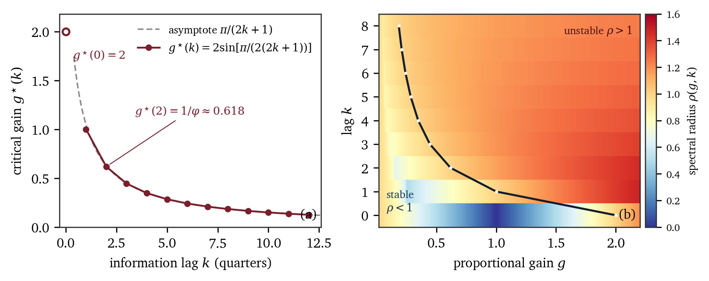
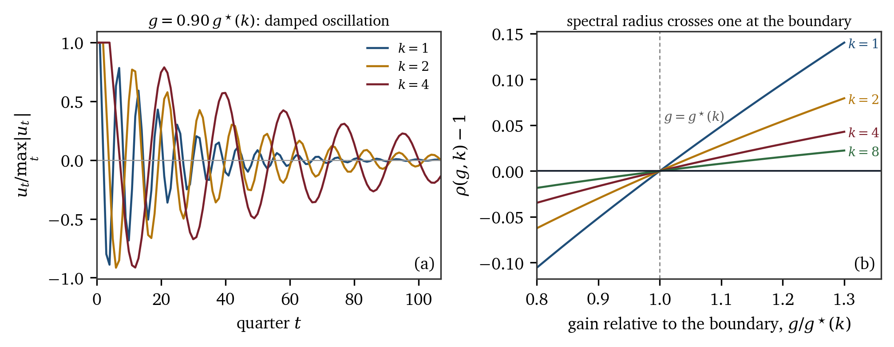
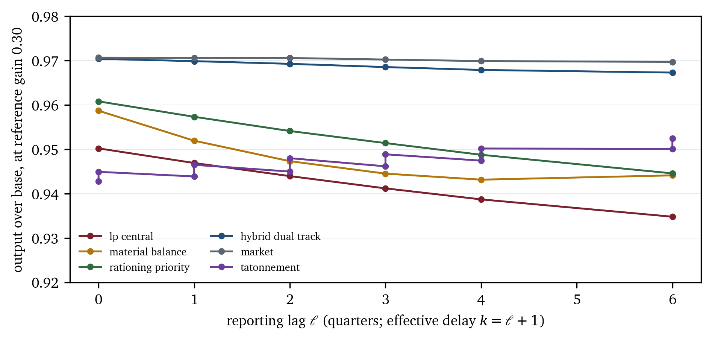

Administrative coordination of an input–output economy is limited less by computation than by the freshness of the information it may use. We derive a sharp boundary for proportional error correction driven by information $k$ periods old: the closed loop is locally stable if and only if the gain satisfies $g < g^\star(k) = 2\sin[\pi/(2(2k+1))] \approx \pi/(2k+1)$, so the gain–lag product is bounded by $\pi/2$, and the oscillation at the boundary has period exactly $2(2k+1)$ quarters. The boundary exists only for negative feedback, and the sign is an empirical property of the instrument rather than a modelling choice: a price that is raised reduces excess demand, but an output target that is raised in a capacity-constrained Leontief economy raises intermediate demand and therefore raises shortage, and a positive loop of this kind has no admissible gain at any delay. We expose six coordination institutions — an omniscient linear programme, material-balance planning, priority rationing, Langean tâtonnement, a competitive market and a dual track — to a common information lag, a common shock stream and a single 20-sector Eurostat input–output substrate, under a pre-registered design of the order of eight thousand runs. The bound is exact and, in a real input–output economy, unreachable: the measured price-loop gain stays below it everywhere, by a factor of twelve to fifty at the median sector, so administered prices are stable because they are too weak to clear a market. What does bind is the quantity loop: with no shock at all, three per cent measurement noise costs material-balance planning more than six per cent of output, against half of one per cent under a dual track, and the loss is created not by revising targets but by the one-sided labour-feasibility projection applied to them — it reaches eighteen per cent of output when labour slack is five per cent and vanishes at a hundred. Two pre-registered hypotheses are falsified: no crossing of the delay boundary is observed, and the dual-track share shows no detectable interior optimum.
Every coordinator works from a picture of the economy that is already out of date. The plan for the coming quarter is built out of last quarter's returns; the wholesale prices that feed a price index are collected months before the index is published; the inventory figures that tell a ministry whether a good is scarce describe a moment that has passed. Delay of this kind is usually treated as an engineering nuisance, something to be reduced with better statistics and otherwise absorbed by the resilience of whatever rule is in place. This paper takes the opposite view. We treat the freshness of information as a first-class property of a coordination institution, and we ask how much of it each institution needs in order to do its job without breaking into oscillation.
The question has a long history, but it has usually been asked in a static form. The socialist calculation debate turned on whether a planning board could possess the knowledge that prices summarise. Mises argued that without markets for the means of production there are no prices, and without prices no rational comparison of alternatives [1]; Hayek added that the relevant knowledge is dispersed, tacit and constantly revised, so that even a benevolent planner with perfect goodwill could not assemble it in time [2]. Lange's reply was, in effect, that the board need not assemble anything: it can behave like an auctioneer, adjusting prices in response to observed excess demand until the economy clears [3] [4]. The reply is formally sound, and it is the intellectual foundation of most subsequent arguments that a sufficiently well equipped centre could coordinate an economy. But it quietly assumes that the auctioneer's observations are current. An auctioneer who learns of excess demand only after a lag is not an auctioneer; he is a driver looking in the mirror.
That difference is the subject of this paper. We distinguish two properties that the debate conflates. The first is how much information a coordination rule uses. The second is how much fresh information it needs in order to remain stable. The distinction is invisible in a static comparison of allocations, because at a steady state both rules produce the same plan. It becomes decisive as soon as the system is perturbed, because a rule that responds to a measured deviation converts its own lag into a loop, and whether that loop damps or ratchets depends on the sign of the feedback as much as on its strength.
The sign is not a matter of taste; it is a property of the economy the rule operates in, and it differs between the two classic instruments. A price that is raised above its clearing level reduces excess demand, so the price loop is negative and can be stabilised if it is pushed gently enough. An output target that is raised in response to a shortage does not reduce the shortage in a capacity-constrained Leontief economy: it raises the intermediate demand for exactly the goods that are scarce, so a tauter plan produces a worse plan. The target loop is positive, and we show that a positive loop admits no stabilising gain at all, however small and however patiently applied. This is the thesis we develop: coordination institutions differ in how much fresh information they require, that requirement is governed by the loop gain each institution must run, and the delay enters as a hard budget on the gain. Delay is the dimension along which institutions separate, and its first act is to decide whether they can be run at all.
The analytical core is a single linear difference equation. Suppose a signal is corrected in proportion to its deviation from the level that would clear the market, and the correction uses a measurement made $k$ periods earlier. Then the deviation $u_t=\log p_t-\log p^\star$ obeys
where the gain $g>0$ collects the adjustment coefficient and the slope of excess demand. Its characteristic polynomial is $z^{k+1}-z^{k}+g$. Section 4 proves that the zero solution is asymptotically stable if and only if
that at the boundary the surviving roots lie on the unit circle at $e^{\pm i\theta_0}$ with $\theta_0=\pi/(2k+1)$, and hence that the oscillation at the boundary has period exactly $2(2k+1)$ quarters. The first values are $g^\star(0)=2$, $g^\star(1)=1$, $g^\star(2)=(\sqrt{5}-1)/2\approx0.618$ and $g^\star(3)\approx0.445$; asymptotically $g^\star(k)\sim\pi/(2k+1)$. Three corollaries matter for what follows. The period scales as roughly four times the lag, which makes the lag observable in the spectral signature of prices rather than merely inferable from them. The product $k\,g^\star(k)$ increases to $\pi/2$, so $g\,k$ — the fraction of a deviation a coordinator removes per quarter, multiplied by the number of quarters he is behind — is bounded: delay does not merely slow coordination down, it imposes a budget on how fast coordination may be attempted at all. And the boundary exists only for negative feedback. If the loop is positive, so that a higher instrument raises rather than lowers the measured gap, the characteristic polynomial takes a value of $-|g|$ at $z=1$ and grows without bound, so it has a real root above one for every positive gain: a positive loop is unstable at every gain, at every delay, with no safe operating point. That asymmetry, not the size of any coefficient, is what separates a price board from a plan target, and it is why the empirical test of the boundary is carried out on prices while the targets get a hypothesis of their own.
The theoretical result is deliberately austere, and by itself it does not rank institutions. It does something more useful: it identifies the quantity on which a ranking should turn. An institution that must move prices briskly to clear markets is exposed to delay; an institution whose allocation rule is inertial is not, but pays for its immunity elsewhere, in the misallocation it tolerates. To put that trade-off on a common footing we build a laboratory in which the only thing that varies is the rule. PlanLab is a mechanism-switchable simulator of an input–output economy in which twenty sectors share a single technology calibrated to the Eurostat symmetric input–output table for the EU-27 in 2020 [5] [6], a single accounting audit and a single stochastic environment. Every institution receives the same observation object, constructed from data $k$ quarters old and corrupted by multiplicative measurement noise; every institution faces the same shock realisations, because the exogenous streams are derived from a common seed. Differences in outcome are therefore attributable to the coordination rule and not to the data, the technology or the luck of the draw. The design is pre-registered in six blocks, B1 to B6, covering calibration, a lag-by-mechanism grid, sectoral shock propagation, rationing against shadow prices, the dual-track share and robustness, for a grid whose declared factors give of the order of eight thousand runs.
The argument is cumulative rather than point-by-point. Section 2 sets the calculation debate, the material-balance tradition, the shortage literature and the delay-and-stability literature against each other, and shows that the intersection is nearly empty: no one has compared coordination institutions on a common substrate while treating information lag as a treatment rather than as a nuisance parameter. Section 3 specifies the substrate, the observation object and the six institutions. Section 4 contains the analysis. Beyond the boundary itself, it establishes that a positive feedback loop has no admissible gain, that the one-period map of the model is monotone on a compact lattice and therefore possesses a stationary plan even when that plan is not stable, and that a balanced plan does not eliminate shortage because the shortfall is fixed by the delivery frontier rather than by the balancing procedure. Section 5 gives the experimental design as amended, states the mapping between the simulator's reporting lag and the theory's effective delay, and reports a power calculation showing that near-threshold instabilities at long lags grow too slowly to be detected through amplitude within the pre-registered horizon, which is why the spectral criterion carries the inferential weight. Section 6 reports the results. The paper now knows four things. It knows the exact gain at which a delayed proportional rule destabilises, $g^\star(k)=2\sin[\pi/(2(2k+1))]$, confirmed by three independent numerical routes to within $10^{-11}$. It knows that an institution can pay a large information rent with no shock and no lag at all: material balance loses more than six per cent of output to three per cent measurement noise, while the dual track loses half of one per cent. It knows when that rent is charged and by what: the loss is created by the interaction of target revision with a one-sided feasibility projection, and it is conditional on labour slack, costing eighteen per cent of output at five per cent slack and nothing at eighty per cent. And it knows two things it expected to find but did not: there is no empirical crossing of the delay boundary in this economy, because the price loop is far too weak to reach it, and no detectable interior optimum in the dual-track share. The two falsifications are reported as falsifications.
Three features of the design deserve emphasis at the outset, because they are what separate this exercise from a simulator demonstration. First, the analytical result is derived before any simulation is run and is used to predict the location of the empirical instability boundary; a discrepancy of more than one period of lag falsifies the mechanism, and the pre-registration says so in advance. Second, the comparison across institutions is a comparison of one economy under different rules, not a comparison of different models, which is what makes the phrase "institutional performance" mean something. Third, the welfare numbers are not treated as a ranking of real economies. They are the outcome of a controlled experiment in which the normative weights are explicit parameters, re-run at plus or minus fifty per cent in B6 and reported alongside measures of distribution, plan fulfilment and the computational effort of planning itself, because the same aggregate output can conceal opposite distributions.
The modern argument about planning begins with Mises's claim that a socialist commonwealth lacks the prices needed for economic calculation, a claim first advanced in 1920 and circulated in English in Hayek's 1935 collection [1]. Hayek's contribution shifted the ground from the absence of prices to the dispersion of knowledge: the data relevant to allocation exist only as the local, transient knowledge of particular agents, and no central authority can collect them in a form usable for a plan [2]. Both arguments are informational, and both are, in the strict sense, about time: the knowledge that would be needed is not merely dispersed but obsolete by the time it could be centralised. This temporal element is rarely made explicit, and it is precisely the element this paper formalises.
Lange's response, published in two parts, accepted the institutional challenge and answered it with a rule rather than with a computation: a central planning board sets prices, observes excess demand and adjusts, and in the limit the allocation reproduces the competitive outcome [3] [4]. The rule is a proportional controller, and its stability properties were not analysed. That is the gap this paper closes. It is worth being clear about what is and is not at issue. Nothing here disputes that a Langean board converges when information is current; Proposition 1 confirms that it does, for gains below $g^\star(0)=2$. The question is what becomes of the convergence when the board's observation is $k$ periods old, and the answer turns out to be a boundary that falls roughly as $1/k$.
The accounting technology of Soviet-type planning was the material balance: a set of commodity balances in physical or value units, each asserting that the sources of a good equal its uses, solved by iterative adjustment at successively lower levels of the hierarchy, with the most important goods balanced first [7] [8]. Ericson's account is particularly useful because it emphasises the procedure rather than the ideology: the classical system is a priority-ordered, quantity-rationing mechanism whose outputs are plans rather than prices, and whose characteristic failure mode is not inefficiency in the static sense but the systematic reproduction of shortage [8].
The analytical apparatus came from two directions. Leontief's input–output accounting made the interdependence of sectors explicit and turned the balance into a linear system [9] [10]; the modern treatment, including capacity constraints and the relation between the quantity and price systems, is in Miller and Blair [11]. Kantorovich's 1939 monograph, known in the West through its 1960 translation, recast the plan as a linear programme and thereby made optimisation, rather than balancing, the criterion [12]; the intellectual history, including the long delay before Soviet economics absorbed it, is documented by Belykh [13]. Von Neumann's growth model supplied the dual characterisation of the balanced path [14]. What this tradition never did was ask how the balancing procedure behaves when the right-hand side of the balances — demand, capacity, stocks — is observed with a lag. It is a static technology applied quarterly.
Kornai's contribution was to insist that shortage is not a residual but an equilibrium phenomenon of a particular institutional configuration, sustained by paternalism and by the soft budget constraint [15] [16] [17]. The formal counterpart is the theory of fix-price equilibria, in which quantities rather than prices clear markets and agents are rationed on the short side [18] [19]; Kornai and Weibull supply the bargaining-theoretic microfoundation for buyer and seller markets [20]. This literature supplies the objects the present model needs — a claim vector, a rationing rule, a priority order, a measure of shortage — but it is almost entirely static. Its equilibria are indexed by prices that are fixed, not by prices that are being adjusted against stale information, and so it cannot speak to the oscillatory behaviour that delay produces. Conversely, the literatures that do study oscillation are rarely about rationing. The two traditions meet at exactly the point this paper occupies.
The economics of delay begins with the cobweb, in which supply responds to last period's price and the resulting second-order difference equation is stable only if the ratio of demand and supply slopes is favourable [21]; adaptive expectations generalise the mechanism [22], and nonlinear versions generate endogenous fluctuations and chaos [23]. All of these are special cases of a first-order delay, $k=1$. The mathematical theory of the general case is classical: functional differential equations are treated by Hale [24], difference equations with delays by Elaydi [25], and the linear delay-difference equation itself by Levin and May in a note that is the closest antecedent of Proposition 1 [26]. What is new here is not the stability algebra but its use: taking an algebraic boundary as a pre-registered prediction for a simulation in which the linearisation is only local, and then reading institutions off the gain they require.
There is a substantial literature on whether computation dissolves the calculation problem. Cockshott and Cottrell argued that the computational complexity of solving a material-balance system is well within the reach of modern machines and that the relevant obstacle is institutional rather than technical [27]; Dapprich and Greenwood review the recent revival of that argument and its critics [28]. Chile's Cybersyn project is the one sustained attempt to build a real-time planning system, and Medina's account is explicit about how much of its design was devoted to managing the delay between plant-level events and central decisions [29]. Quantitative work on the Soviet economy has mostly been retrospective and structural, using neoclassical growth frameworks to decompose the sources of industrialisation rather than to model the coordination mechanism itself [30]. The gap is systematic: there is, to our knowledge, no controlled comparison of alternative coordination institutions operating on the same technology, observing the same delayed data and facing the same shocks. That is what the present design supplies.
China's dual-track reforms are the largest natural experiment in running two coordination mechanisms side by side. Sicular documented how plan and market prices interacted in agricultural commerce [31]; Lau, Qian and Roland gave the dual track its canonical interpretation, showing how a plan track at administered prices can protect existing rents while a market track at the margin allocates new output [32]. Murphy, Shleifer and Vishny had earlier warned that partial reform can be worse than either extreme when the state sector retains priority access to inputs [33], and Weitzman's scepticism about the transferability of theory to transition is a useful corrective to over-confident comparative statics [34]. The dual track enters the present design as a genuinely parametric institution — a plan share $\theta$ — which allows the interior-optimum question to be posed as a testable hypothesis rather than as a narrative.
Three literatures supply the components of this paper and none supplies the synthesis. The calculation debate supplies the question but treats information as a stock to be possessed rather than as a flow with a lag. The material-balance and shortage literature supplies the institutions and the accounting but is static. The delay-and-stability literature supplies the mathematics but has been applied to markets and populations, not to the comparative study of coordination rules. The contribution here is to put a sharp stability boundary for delayed proportional correction at the centre of a controlled comparison of institutions, and to argue that the axis on which institutions differ is the freshness of the information their decision rules require.
The economy has $n=20$ sectors indexed $i,j=1,\dots,n$ and runs in quarterly periods $t=1,\dots,T$. All quantities are in constant-price value units of the source table: a sector's gross output $x_i$ is a value, the direct input coefficient $A_{ij}=Z_{ij}/x_j$ is the value of good $i$ embodied in one unit of value of good $j$, and no attempt is made to separate price from volume movements within a period. The matrix $A$ is obtained from the Eurostat symmetric input–output table at basic prices for the EU-27, reference year 2020, aggregated from sixty-four to twenty sectors by a documented mapping [5] [6]. A fully specified synthetic generator serves as an offline fallback and as a second substrate in the robustness block; it is documented in the repository and is not used for any headline result.
The technology is Leontief: no substitution between inputs, constant returns, and fixed capital–output ratios $\kappa_i$ so that productive capacity is $\bar x_i=K_i/\kappa_i$. Labour requirements $\ell_i$ per unit of gross output are calibrated so that the base-year wage bill exhausts value added, which makes the column sums of $A$ strictly below one and hence guarantees that $A$ is productive: its spectral radius satisfies $\rho(A)<1$ and $(I-A)^{-1}\ge0$ exists with non-negative entries. That property is used repeatedly in Section 4 and is checked when the technology is loaded rather than assumed.
Two accounting disciplines are imposed on every period. First, the per-sector balance
must hold to within $10^{-8}$ of scale, with $S^{0}{i}$ the beginning inventory, $M_i$ imports (zero unless a scenario enables trade), $C_i$ household consumption, $G_i$ government and other final demand, $I_i$ investment and $S^{\mathrm{end}}$ the end-of-period inventory. A violation raises an error and aborts the run; it is not tolerated and repaired. Second, every allocation must be feasible in the sense that no sector receives more of a good than exists, which is enforced by the short-side map below rather than by post-hoc clipping.
Each period executes a fixed sequence, and the sequence is part of the model rather than an implementation detail, because it determines what information is available when each decision is taken. A shock is drawn, determining capacity, household demand and government demand. An observation is constructed from data $k$ periods old with multiplicative noise. The mechanism forms a plan. Nominal supply is assembled as beginning inventory plus planned output. The mechanism allocates that supply among claimants — intermediate users, households, government, investment and the inventory buffer — in an order determined by its own priority rule. The engine then solves for realised gross output as the short-side fixed point of the allocation, computes the accounting identities, audits them, and finally asks the mechanism for the price vector to be used next period. Metrics are recorded at the end of the period.
The fifth and sixth steps are where the economics lives. The mechanism may claim whatever it likes, but the engine decides what is produced:
iterated from $x^{(0)}=\min(\text{target},\text{capacity})$. Here $e_i$ collects the non-intermediate claims on good $i$ that have already been granted. A sector cannot produce more than its capacity permits, and it cannot produce more than its scarcest input permits given what the other sectors are taking; the fixed point of that statement is the largest output vector consistent with the granted claims. This is the channel through which a shortage in one sector propagates to its users, and it is the reason the model can represent the classical planning failure mode at all. The count of iterations required to reach the fixed point is recorded and is reported as a measure of planning effort rather than discarded as a diagnostic.
The coordinator never sees the current state. What it sees is an observation object
where $o$ ranges over demand, capacity, inventory, backlog, prices and labour, and $\odot$ is the elementwise product. The multiplicative form keeps the observation positive and makes $\sigma$ an approximate coefficient of variation; the correction term in the mean keeps the observation unbiased in levels. The lag $k$ is an integer number of quarters and is a treatment variable, not a calibration. It is important to be precise about what it counts, because a one-period error here would invalidate the whole comparison with Section 4. A realised outcome cannot be reported before the period that follows it, so even a perfectly informed coordinator reacts to last period's gap. The simulator's parameter $\ell$ (info.lag) counts reporting lags — how many complete additional periods of publication or transmission delay sit between the event and the observation — and the theory's lag is the total: $k_{\mathrm{eff}}=\ell+1$. Lag zero is therefore not clairvoyance but the earliest physically attainable case, the theoretical no-delay benchmark $k=0$ is unattainable in the simulator, and the smallest lag any experiment can exhibit is $k_{\mathrm{eff}}=1$. Every table and figure in this paper reports $k_{\mathrm{eff}}$ and labels it as such. The noise $\sigma$ is itself a treatment in the robustness block and is zero elsewhere, so that the pure delay effect can be isolated.
The observation object is deliberately impoverished in one respect and enriched in another. It is impoverished because it is a vector of aggregates: the coordinator knows total demand for a good, not who demanded it. It is enriched because the same object is given to every institution, the market included. This is the identifying assumption of the whole design. Institutions differ in what they do with the observation, never in what they are allowed to see. A market that could see the current period's prices while a planning board could not would not be a comparison of institutions but of information sets.
Six coordination mechanisms are implemented against a single abstract interface with three decisions: form a plan, allocate supply among claimants, and set next period's prices. They are summarised in Table 1 and specified in Appendix B.
| id | institution | information used | allocation rule |
|---|---|---|---|
lp_central |
omniscient central linear programme | latest observation of demand and capacity | optimal plan of $\max w\cdot y$ subject to $(I-A)x\ge y$, $x\le\bar x$; pro-rata fulfilment |
material_balance |
resource–need balancing, $R$ rounds, priority tier first | plan targets and observed stocks | proportional within priority tier |
rationing_priority |
administrative quotas, tier 1 before tier 2 | observation | quota per claimant in priority order |
tatonnement |
Langean price board, $p\leftarrow p+\eta z$ | observation and own prices | willingness-to-pay order |
market |
within-period Walrasian tâtonnement | current prices within the period | market clearing |
hybrid_dual_track |
plan track at administered price, share $\theta$; market track, $1-\theta$ | mixed | two-tier |
The linear programme is included as an upper bound rather than as a candidate policy: it knows the current demand vector exactly, it solves the planner's problem exactly, and it therefore reports what would be achieved if the informational constraint were suspended. Its role is to normalise the welfare scale and, more importantly, to measure the cost of the constraint. The gap between its performance and the performance of the second-best institution at lag $k$ is an estimate of what freshness is worth.
Welfare is a discounted sum of a logarithmic aggregate of consumption,
with $c_{0,i}=10^{-3}$ of base-year final consumption for sector $i$ to keep the logarithm finite when a good is entirely unavailable, and with weights $w_i=1$ except for essentials, which carry $w_i=1.2$. The weights are a normative choice and are treated as a scenario parameter, not as a truth; the robustness block re-runs every headline result with the shortage and inventory penalties moved by fifty per cent in each direction. The floor $c_0$ matters more than it looks: it makes the welfare function bounded below, so that a total shortage of one good produces a large but finite loss instead of an infinite one, which prevents a single catastrophic sector from dominating every comparison.
There is a property of this functional that has to be stated because it inverts the natural reading of every welfare column in the paper. A logarithmic aggregate with a floor is inequality-averse across sectors and is dominated by how much is delivered in the worst sector-periods, not by the total delivered. In the six-institution comparison the correlation between mean log welfare and mean consumption is $-0.44$, and the correlation between mean log welfare and the number of sector-quarters delivering less than ten per cent of base consumption is $-0.92$: welfare rises as shortfalls become rarer even when the total consumed falls. Material balance has the lowest mean consumption of the six, $9.29$ million, and the highest mean log welfare, $249.09$, against the linear programme's $10.18$ million and $248.81$. Neither ranking is wrong and neither is the ranking of the other; they answer different questions, and a reader who treats a welfare column as a consumption ranking will draw the opposite conclusion to the one the functional encodes. Every results table in this paper therefore reports consumption and welfare side by side, and where welfare appears alone its caption says which object it is.
Prices are indices with base $1.0$ in the base year and are set administratively by four of the six institutions and by the auctioneer in the other two. Reported price statistics are the dispersion $\mathrm{sd}(\log p)$ across sectors, the volatility $\mathrm{sd}(\Delta\log p)$ and — the object of the central test — the deviation of the mean log price from its own twenty-period moving average, together with its autocorrelation at lags one to four. Plan fulfilment, inventory ratios, capital utilisation, recovery half-life and the shortage Gini across sectors are reported as secondary outcomes. Aggregate output is computed but never reported alone, for the reason given in Section 5: two economies with identical output can have opposite distributions of who bears the shortage.
The identifying claim is that differences in outcomes are attributable to the coordination rule. It is worth noting at the outset that this claim is not merely asserted: with zero lag, zero noise and no shock, all six institutions reproduce the base year exactly, so the apparatus itself does not manufacture differences between them. Section 6 reports that verification as the first result. The claim is only as good as the list of things held fixed, so the list is explicit. The technology is fixed across institutions within a run set. The observation object is constructed once per period and passed to whichever institution is active, so the same lag, the same noise draw and the same vintage of data apply to all six. The exogenous shock streams are derived deterministically from the pair (scenario identifier, seed), so identical seeds produce identical shock paths across institutions; this is what makes the comparisons paired rather than independent, and it is preserved by construction in the grid generator rather than by convention. The welfare weights, the discount factor and the accounting tolerances are scenario parameters.
What is not fixed, and cannot be, is the richness of each institution's internal state: a tâtonnement board carries a price vector, a material-balance office carries a plan, a market carries an order book. Institutions differ in their memory as well as in their rule, and that difference is part of what is being measured rather than a confound to be eliminated. The paper is explicit about the consequence in Section B.3: a difference in performance between two institutions cannot be attributed to a single scalar, and the best the design can do is to measure the gain each one operates at and compare that measurement with the theory.
Consider a signal that a coordinator revises in proportion to a gap he has already observed. Two instances matter, and they are the two classic instruments of administrative coordination. The first is an administered price, $\log p_{t}=\log p_{t-1}+\eta\,s_{t-k}$, where $s$ is the observed shortage rate or excess demand. The second is an output target, $\log T_{t}=\log T_{t-1}+\eta\,s_{t-k}$, where the plan is revised upward in response to an observed shortage. In both cases the revision coefficient is $\eta>0$ and the observation is $k$ periods old; the two rules differ only in the sign of the economic response that closes the loop.
Let $u_t$ denote the log deviation of the instrument from its stationary value, and let the gap respond locally as $s_t=-b\,u_t+O(u_t^{2})$. The coefficient $b$ is not a free parameter of the model; it is an equilibrium object, and its sign is a property of the economy rather than of the administrator. For a price, $b>0$: a higher price reduces excess demand, through the household demand elasticity and through the substitution it induces. For an output target in a capacity-constrained Leontief economy, $b<0$: a higher planned output raises the intermediate demand for the goods that are already scarce, so the observed shortage rises rather than falls. Substituting the local response into the revision rule gives
for the price loop, and the same equation with $g<0$ for the target loop. This is the sense in which the analysis is local: (7) is the linearisation of a nonlinear rule about a steady state, and the steady state, the elasticity $b$ and the effective gain $g$ are all computed numerically in the full model. The lag $k$ in (7) is the effective delay of the loop, related to the simulator's reporting lag $\ell$ by $k=\ell+1$ as set out in Section 3; the no-delay case $k=0$ is a theoretical benchmark that no coordinator can attain, and it is retained because it makes the boundary formula legible at its endpoint.
Three remarks fix the scope. First, the linearisation is about the deviation, not about the technology: $A$, capacity and the rationing rule all enter through $b$ and through the location of the stationary point. Second, the rule is proportional, not integral or derivative; a coordinator who responds to the change in the gap rather than to its level faces a different characteristic polynomial, and we do not analyse that case. Third, the delay is treated as deterministic. Stochastic delay would smear the boundary rather than move it, and is left to future work. The sign of $b$, by contrast, is not an assumption to be relaxed: it is the object the next two subsections turn on.
Proposition 1 (delay-instability threshold). Let $k\in\mathbb{N}$ and $g>0$, and consider
The zero solution is asymptotically stable if and only if $0<g<g^\star(k)$, where
and it is unstable if $g>g^\star(k)$. At $g=g^\star(k)$ a conjugate pair of roots of the characteristic polynomial lies on the unit circle at $e^{\pm i\theta_0}$ with $\theta_0=\pi/(2k+1)$, all other roots lie strictly inside, and every solution is bounded and oscillatory but does not converge.
Proof. Write $P_k(z,g)=z^{k+1}-z^{k}+g$, so that solutions of (8) are combinations of $z^{t}$ over the roots of $P_k(\cdot,g)$. The proof has three steps: locate the gains at which a root can cross the unit circle, show that every such crossing is outward, and count.
Step 1, crossing values. Suppose $P_k(z,g)=0$ with $|z|=1$, and write $z=e^{i\theta}$ with $\theta\in(0,2\pi)$. Then $z^{k}(z-1)=-g$, so taking moduli gives $g=|z-1|=2\sin(\theta/2)$, where positivity of the sine uses $\theta\in(0,2\pi)$. Taking arguments, and using $z-1=2\sin(\theta/2)\,e^{i(\theta/2+\pi/2)}$,
and since $-g$ is real and negative the phase must equal $\pi$ modulo $2\pi$, that is
The solutions of (11) are $\theta_m=\pi(1+4m)/(2k+1)$ for integers $m\ge0$, and the requirement $\theta_m<2\pi$ gives $1+4m<4k+2$, that is $m\le k$. Each $\theta_m$ yields the gain $g_m=2\sin[\pi(1+4m)/(2(2k+1))]$. The sequence $x_m=\pi(1+4m)/(2(2k+1))$ increases in $m$ from $x_0=\pi/(4k+2)$ to $x_k=\pi-x_0$, and since the sine is symmetric about $\pi/2$ and increasing on $(0,\pi/2)$ we have $\sin x_m\ge\sin x_0$ for every $m$ in range. Hence $g^\star(k)=g_0$ is the least gain at which $P_k$ has a root on the unit circle, and it is attained only at $m=0$ and $m=k$, both giving the same value.
Step 2, every crossing is outward. Let $z(g)$ be the smooth branch of roots with $z(g_0)=e^{i\theta_0}$ at a crossing. Differentiating $P_k(z(g),g)=0$ gives $z'=-1/P_{k,z}$ with $P_{k,z}=z^{k-1}\big((k+1)z-k\big)$, which cannot vanish on $|z|=1$: its only zero in the closed unit disc would be $z=k/(k+1)$, of modulus less than one. Using $z^{k+1}=z^{k}-g$ at the root, the denominator simplifies to $z^{k}\big((k+1)z-k\big)=z^{k}-(k+1)g$. Since $|z|=1$ we have $\bar z=1/z$, so
At a crossing $g=g_m\ge g^\star(k)$, and therefore
where the strict inequality is the elementary bound $g^\star(k)\ge 2/(2k+1)$, obtained from $\sin x\ge 2x/\pi$ on $[0,\pi/2]$, which gives $(k+1)g^\star(k)\ge 2(k+1)/(2k+1)>1$. The numerator in (12) is therefore strictly negative and $d|z|^{2}/dg>0$: every crossing of the unit circle is outward as $g$ increases. Since the denominator does not vanish, each crossing root is simple, so the implicit function theorem applies and exactly two roots pass from inside to outside — one, when the crossing root is real, as happens at $k=0$.
Step 3, counting. Let $N(g)$ be the number of roots in the open unit disc. Roots depend continuously on $g$ and a root can leave the disc only through the circle. By Step 1 there is no root on the circle for $g\in(0,g^\star)$, so $N$ is constant there. For small $g>0$ the roots of $P_k$ lie near those of $z^{k}(z-1)$, namely $z=1$ with multiplicity one and $z=0$ with multiplicity $k$; the root near $1$ is $1-g+O(g^{2})$, which lies inside the disc for small positive $g$, and the $k$ roots near $0$ have modulus of order $g^{1/k}$. Hence $N(g)=k+1$ on $(0,g^\star)$, so the spectral radius is strictly below one and the zero solution is asymptotically stable. At $g=g^\star$ a conjugate pair reaches the circle and by Step 2 it moves outside for $g>g^\star$; no later crossing can bring a root back inside, because by Step 2 every crossing in the admissible set is outward, so $N$ is non-increasing and $N
Three small cases give the formula a concrete feel. With $k=0$ there is no lag, $P_0(z)=z-1+g$, the root is $1-g$, and stability requires $|1-g|<1$, that is $0<g<2=g^\star(0)$. With $k=1$, $P_1(z)=z^{2}-z+g$, whose roots are $\tfrac{1}{2}\big(1\pm\sqrt{1-4g}\big)$; their product is $g$, so stability requires $g<1=g^\star(1)$. With $k=2$, $g^\star(2)=2\sin(\pi/10)=(\sqrt{5}-1)/2$, the reciprocal of the golden ratio — a pleasant accident rather than a structural fact. Table 2 and Figure 1 display the boundary, its angle and its period.
| k_effective | g_star | period_theory |
|---|---|---|
| 1 | 1 | 6 |
| 2 | 0.6180339887 | 10 |
| 3 | 0.4450418679 | 14 |
| 4 | 0.3472963553 | 18 |
| 5 | 0.2846296765 | 22 |
| 6 | 0.2410733605 | 26 |
| 7 | 0.2090569265 | 30 |
| 8 | 0.1845367189 | 34 |

Corollary 1 (period at the boundary). At $g=g^\star(k)$ the dominant roots are $e^{\pm i\theta_0}$ with $\theta_0=\pi/(2k+1)$. Every real solution of (8) is a real linear combination of $\rho^{t}\cos(t\theta)$ and $\rho^{t}\sin(t\theta)$ over the roots $\rho e^{\pm i\theta}$; at the boundary the surviving pair contributes a sinusoid of period $2\pi/\theta_0$, and all other modes decay. Hence the oscillation period at the boundary is exactly
independently of $g$, of the technology and of the welfare weights.
Proof. Immediate from Proposition 1 and the definition of angular frequency: a root $e^{i\theta}$ contributes a component of period $2\pi/\theta$, and $\theta_0=\pi/(2k+1)$. $\blacksquare$
The corollary is what makes the lag measurable. A purely local stability test tells us only that a boundary exists somewhere; the period tells us where to look in the spectral density, and it predicts a quantity that grows linearly in the lag with slope four. If the simulated period at the empirical boundary is not approximately $4k+2$ quarters, then the linear mechanism is not the mechanism generating the oscillation, whatever else may be true. This is the sense in which the theory is falsifiable by the simulation rather than merely illustrated by it. Figure 2 makes the prediction visual: at ninety per cent of the critical gain the impulse response decays, but it decays while oscillating at the period the corollary names.

Corollary 2 (gain–lag budget). For every $k\ge0$,
Proof. Using $\sin x\le x$ for $x\ge0$, we get $k\,g^\star(k)=2k\sin[\pi/(2(2k+1))]\le 2k\cdot\pi/(2(2k+1))=k\pi/(2k+1)<\pi/2$. The limit follows from $\sin x/x\to1$ with $x=\pi/(2(2k+1))$: $k\,g^\star(k)=2kx\,(\sin x/x)\to 2k\pi/(2(2k+1))\to\pi/2$. $\blacksquare$
Corollary 2 is the quantitative form of the paper's thesis. The gain has units of "fraction of the deviation removed per quarter", the lag has units of quarters, and their product is dimensionless and bounded by $\pi/2\approx1.57$. An administrator who wishes to remove ten per cent of a deviation each quarter — $g=0.1$ — can tolerate a measurement lag of about fifteen quarters, which is comfortable. An administrator who must remove half of it each quarter — $g=0.5$ — can tolerate three. The budget is not a statement about the skill or the technology of the coordinator; it is a statement about the closed loop, and it binds on anyone whose rule responds to a measured deviation, whether that rule is implemented by a ministry, by a price board or by an auctioneer.
Corollary 2 has a dual that is worth stating, because it is the form in which the result bears on measurement. Since $g^\star(k)$ decreases monotonically to zero, no fixed gain is safe against an arbitrarily long lag: for every $g>0$ there is a critical lag $k^{\dagger}(g)=\min{k: g^{\star}(k)\le g}$ beyond which the loop is unstable, and the asymptotics of Corollary 2 place it at approximately $\pi/(2g)$ quarters. A loop run at a gain of $0.02$ is stable for lags below about seventy-eight quarters and unstable above them; the same loop run at $0.13$ turns at about twelve. The dual cuts in two directions. It is why a stability claim must be reported together with the range of lags it covers, and it is why a very slow reporting system is not safe merely because it is slow: delay consumes whatever margin weak feedback leaves, at a rate of about one and a half quarters per unit of gain.
It also explains why the two properties distinguished in Section 1 are different. An institution may use a great deal of information and still need very little fresh information, provided its rule is inertial; and an institution may use a little information and need it fresh, provided its rule is aggressive. The budget is a constraint on the second property only, and therefore the second property — not the first — is the one along which institutions will separate under delay.
Proposition 1 assumes $g>0$, that is, negative feedback. The complementary case is not a mirror image, and it is the one that governs the revision of physical plans.
Corollary 4 (a positive loop has no admissible gain). Suppose $b<0$, so that the loop is positive, and write $G=\eta|b|>0$. Then the characteristic polynomial of (7) is $Q_k(z,G)=z^{k+1}-z^{k}-G$, and the zero solution is unstable for every $G>0$ and every $k\ge0$. There is no revision coefficient, however small, that stabilises a positive feedback loop.
Proof. Evaluate at $z=1$: $Q_k(1,G)=1-1-G=-G<0$. Since $Q_k(z,G)\to+\infty$ as $z\to+\infty$ along the real axis, the intermediate value theorem gives a real root $r>1$. The spectral radius therefore exceeds one for every $G>0$, and the zero solution is unstable. $\blacksquare$
The corollary is a statement about the whole class of proportional rules, not about a particular calibration: for a positive loop the admissible set of gains is empty, so the question "how gently must the planner revise?" has no answer other than "not at all". This is a sharper claim than the familiar observation that planning is difficult under shortage. It says that the revision of taut plans is self-defeating in the linear approximation, before any nonlinearity or capacity constraint is reached, and that the failure is not a matter of tuning.
The corollary is an implication rather than an assertion, and its antecedent is an empirical matter. Nothing in the mathematics forces $b<0$; what forces it is the architecture of the plan step. That step is a composition of an upward revision with a projection onto the labour-feasible set, and the projection supplies the negative response: it can only cut, it cuts hardest where labour is most intensive, and what it removes is not put back. With the filter switched off, a revision gain of one costs nothing and the loop is effectively open, so the corollary has no purchase at all. Section 6.3 shows both sides of that contrast directly. The corollary therefore does two things at once: it identifies why the coupled loop is expensive once it is closed — there is no gain small enough to be safe, so the cost begins at the first increment and never turns back — and, by being conditional, it locates the culprit in the filter rather than in the revision. Table 3 shows the empirical counterpart in the pilot runs: mean and peak shortage rise and welfare falls monotonically in the revision gain, exactly as a loop with $b<0$ and no admissible gain predicts.
material_balance on the 20-sector Eurostat 2020 substrate with an effective delay of two quarters, a 40 per cent capacity shock to sector c12, and three seeds, varying the gain with which output targets are revised in response to the observed shortage. Mean and peak shortage rise and welfare falls from the first increment: the plan-revision loop is positive, and Corollary 4 says no positive gain can be stabilising. Source: the calibration record in docs/AMENDMENTS.md, Amendment 1.| revision gain | mean shortage | peak shortage | mean welfare |
|---|---|---|---|
| 0.0 | 0.0173 | 0.0415 | 258.931 |
| 0.1 | 0.0179 | 0.0486 | 258.935 |
| 0.3 | 0.0203 | 0.0412 | 258.289 |
| 0.5 | 0.0577 | 0.0447 | 257.019 |
| 0.8 | 0.0685 | 0.1184 | 256.140 |
| 1.2 | 0.0846 | 0.1721 | 255.379 |
| 2.0 | 0.1066 | 0.2496 | 254.556 |
The asymmetry between the two loops is the analytical expression of the paper's thesis, and it is worth stating in one sentence. A price board is an institution whose loop is negative and whose admissible gain is therefore a positive number that delay shrinks; a plan target is an institution whose loop is positive and whose admissible gain is zero. Delay does not affect the two symmetrically — it converts a comfortable margin into a tight one in the first case, and it is irrelevant in the second because there was never a margin.
The second analytical result concerns the object the plan loop is trying to find. Corollary 4 says that a proportional revision of output targets cannot be stabilising in a capacity-constrained Leontief economy; the question then arises whether the system has a stationary plan at all, or whether the revision simply wanders. The answer is that a stationary plan exists and is the greatest fixed point of a monotone map, even though it is not attracting. Two lemmas establish the monotonicity.
The engine does not compute realised output by a cascade of proportional cuts. It solves a small linear programme: the maximal output vector that the goods balance and the capacity bound jointly permit,
where $\bar x$ is the vector of targets, $r$ the available stocks, $\rho$ the reserve that must be held back for final delivery, $\ell$ the labour requirements and $L$ available labour. This is the standard non-substitution short-side allocation: output is limited by what the goods balance allows, not by a proportional rule of thumb, and the programme is small enough that solving it exactly is cheaper than iterating towards it.
Lemma A (the short side is monotone). The operator $R$ of (16) is monotone non-decreasing in the target vector $\bar x$ and in the stock vector $r$.
Proof. Both $\bar x$ and $r$ enter the programme only through the constraint set, $\bar x$ through the upper bounds and $r$ through the right-hand side of the goods balance. Enlarging either componentwise enlarges the feasible set, and the optimal value of a maximisation problem cannot fall when the feasible set is enlarged. Taking the minimal optimal solution, by a lexicographic tie-break, makes the selection monotone. $\blacksquare$
Lemma B (rationing is monotone and conservative). Fix claims and priority tiers. The priority-filling rule $G$ is monotone non-decreasing in the supply vector and satisfies $\sum_j G_j(s)\le s$ componentwise.
Proof. Each claimant receives $\min{1,\,\text{remaining}/\text{claimed}}$ times his claim, good by good, and "remaining" decreases by exactly what is granted. An increase in supply raises the multiplier for every claimant and leaves the claims unchanged, so every grant is non-decreasing. The grants for a good are bounded by the supply of that good because the multiplier never exceeds one and the remaining quantity never goes negative. $\blacksquare$
Proposition 2 (existence of a stationary plan). Consider the one-period map $\Psi$ that takes a target vector $T_t$ to the next period's target by realising output through (16), rationing it by Lemma B, observing the resulting gap, and revising: $\Psi(T)=T\odot\big(1+\eta\,s(T)\big)^{+}$. Then $\Psi$ is monotone non-decreasing on the compact lattice $[0,(1+\eta)T_{\max}]^{n}$, it maps that lattice into itself, and it possesses a greatest fixed point $T^{\star}$ and a least fixed point $T_{\star}$, obtained respectively by the descending iteration from the top and the ascending iteration from the bottom.
Proof. By Lemma A the realised output is non-decreasing in the targets; by Lemma B the grants, and hence the observed gap $s$, are non-decreasing in the realised output and the supply. The revision factor $\big(1+\eta s\big)^{+}$ is therefore non-decreasing in $T$, and it is non-negative, so the product with $T$ is monotone non-decreasing in $T$. The image lies in $[0,(1+\eta)T_{\max}]^{n}$ by construction of the bound. A monotone map of a complete lattice into itself has a non-empty, complete fixed-point set by the Knaster–Tarski theorem [35], and the two iterations named in the statement converge to its greatest and least elements respectively, because the orbit from the top is descending and the orbit from the bottom is ascending, and each converges to a fixed point that dominates, or is dominated by, every other. $\blacksquare$
Proposition 2 and Corollary 4 must be read together, and the contrast between them is the point. Existence of a stationary plan is a lattice-theoretic fact about monotone maps; it holds whatever the sign of the feedback, and it is what allows the model to settle into a well-defined state rather than wandering. Stability of that plan is a different matter, governed by the spectral radius of the linearisation, and by Corollary 4 the plan loop fails that test for every positive gain. A planning office can therefore have a well-defined stationary plan that it can never reach by revising towards it. This is a more precise statement of the classical intuition that a shortage economy reproduces shortage: the reproduction is a stable fixed point of the institutions, not of the revision rule.
Proposition 3 (the short side). Let $A\ge0$ with $\rho(A)<1$, let $\bar x>0$ be the output bound $\min(\text{target},\text{capacity})$, let $s\ge0$ be initial stocks and let $e\ge0$ be a vector of claims. Define the delivery frontier $\bar y:=(I-A)\bar x+s$. Then the set of attainable delivery vectors is
which is a complete lattice closed under componentwise max. The short-side rule delivers $d^\star=\min(e,\bar y)$, the greatest element of $Y$ not exceeding $e$, and a shortage of good $i$ occurs, $d^{\star}_{i}
Proof. A vector $d\ge0$ is attainable if there is $x$ with $0\le x\le\bar x$ and $(I-A)x\ge d-s$. Since $\rho(A)<1$ and $A\ge0$, the inverse $(I-A)^{-1}$ exists and is non-negative, so $(I-A)x\ge d-s$ if and only if $x\ge(I-A)^{-1}(d-s)$. Such an $x$ exists within the bound if and only if $(I-A)^{-1}(d-s)\le\bar x$, and multiplying by the non-negative matrix $I-A$ gives $d-s\le(I-A)\bar x$, that is $d\le\bar y$. The set $Y$ is a product of intervals, hence a complete lattice, and it is closed under componentwise maximum because $\max(d,d')\le\bar y$ whenever $d,d'\le\bar y$. The greatest element of $Y$ that does not exceed $e$ is the componentwise minimum $\min(e,\bar y)$, and $\min(e_i,\bar y_i)
The frontier $\bar y$ is exactly what the programme (16) computes when the plan is realised at the bound, so Proposition 3 characterises the set of delivery vectors from which the engine's linear programme selects. The proposition is the formal version of a claim the shortage literature makes informally, and it has sharp policy content. Material balance guarantees that the plan is internally consistent: sources equal uses at the target vector. It does not and cannot guarantee that the target vector is large enough to satisfy claims, and when it is not, the shortfall is $\max(0,e-\bar y)$, which depends only on the delivery frontier and the claim vector. The balancing procedure, however many rounds it runs and however cleverly its priorities are ordered, cannot alter that total. What it can alter is who bears it.
Corollary 3 (priority redistributes, it does not create). Suppose the claims on each good exceed the frontier, $e>\bar y$ componentwise, and suppose the allocation rule exhausts the available quantity of every good. Then aggregate delivery $\sum_i d_i$ equals $\sum_i\bar y_i$ under every such rule, and the aggregate shortage rate is $\sum_i(e_i-\bar y_i)/\sum_i e_i$, independently of the priority order. The priority order determines only the sectoral incidence $d_i$. A comparison of institutions on aggregate shortage therefore measures their delivery frontier, while a comparison on shortage incidence measures their priorities; conflating the two is a specification error.
Proof. If every good's available quantity $\bar y_i$ is fully allocated among the claimants of that good, then $\sum_i d_i=\sum_i\bar y_i$ regardless of the order in which claimants are served, and the shortage rate is determined by aggregate claims and the aggregate frontier. That the sectoral distribution $d_i$ depends on the order follows by considering two claimants of the same good at different priority ranks. $\blacksquare$
Corollary 3 is why Section 5 reports the shortage Gini across sectors alongside the mean shortage rate, and why the protocol forbids reporting aggregate output on its own. It also disciplines the interpretation of the mechanism ranking: if two institutions produce the same frontier and differ only in priority, their mean shortage rates will be identical by construction, and any welfare difference between them comes entirely from the distribution of the shortfall across sectors and across the household and non-household claimants.
Three limits should be stated plainly. The analysis is local: (1) is a linearisation, the boundary is a statement about the spectral radius of a linear map, and a nonlinear system can leave the neighbourhood of its steady state before the linear instability manifests, or settle into a bounded cycle that the linear theory calls unstable. In the model, capacity constraints and the short-side map are precisely such nonlinearities, so the comparison between the analytic and the simulated boundary in B2 is a genuine test of whether the local approximation survives contact with them, not a tautology. The gain is not a primitive: it is $\eta a$, and $a$ depends on the rationing rule, the inventory position and the priority structure, so it must be measured numerically in the full model, and the paper treats it as an estimated object with a sampling distribution rather than as a known constant. And the theory says nothing about welfare. It identifies the constraint; whether the constraint binds more on one institution than on another, and what that costs in consumption, is an empirical question that the design in Section 5 is built to answer.
The single most consequential object in the analysis is the sign of $b$, and it is not deliverable by theory. That a price reduces excess demand is a statement about demand elasticities; that a target raises shortage is a statement about a downward-only filter and about who ends up absorbing what the filter removes. Both must be established from the calibrated economy rather than assumed, and the paper treats the sign as a measured quantity, stating in advance which hypothesis is tested on which loop: the boundary test on the price loop, where $b>0$, and a separate hypothesis on the target loop, where $b<0$ would make the admissible set of gains empty.
Magnitude matters as much as sign, and it is the point on which the paper's second conclusion turns. The gain is the product of the adjustment coefficient and the response coefficient, both of which are small in a real economy: an administered price moves markets weakly, and a revision of physical targets moves a goods balance weakly except through the balancing step. Proposition 1 therefore has two distinct empirical fates, and only one of them is a constraint. A loop whose gain is two orders of magnitude below $g^\star$ is stable in the way that a heavy door is closed: the boundary is mathematically exact and behaviourally irrelevant, and the institution is inert rather than safe. Section 6 reports the distance between the two, because a stability result that is quoted without that distance would be misleading in the direction of reassurance.
The design was frozen before any result was generated, in a protocol that names five hypotheses, six experiment blocks, six outcome measures, five statistical procedures and eight validity threats with their mitigations. The hypotheses are stated as falsifiable predictions with explicit falsification conditions. H1 asserts that a critical lag exists for tâtonnement and that the simulated boundary matches the analytic one to within one period of lag, and is falsified if the oscillation amplitude at $k\ge k^\star$ is not significantly larger than at $k=0$ by a one-sided Mann–Whitney test at $\alpha=0.05$. H2 asserts that welfare loss under delay is ordered by the freshness of information required, largest for the linear programme and smallest for material balance, and is falsified if the slope of welfare loss against $k$ is not largest for lp_central. H3 asserts that material balance does not eliminate shortage and is falsified if the mean shortage rate under a thirty per cent sectoral capacity shock falls below 0.5 per cent. H4 asserts downstream amplification of a single-sector capacity shock above unity and increasing in forward-linkage centrality. H5 asserts an interior optimum in the dual-track share $\theta$. Deviations from the protocol are recorded with date and reason in a separate file, and any result that was not pre-specified is labelled exploratory wherever it appears.
This paper is written against the protocol and not after the fact. Section 3 and Section 4 were drafted from the frozen documents; the boundary in Proposition 1 was derived independently of the simulator and is used to predict the location of the empirical boundary; and the design below is transcribed from the protocol rather than reconstructed. Where the analysis goes beyond the protocol — the effective-gain measurement of Section 5.6 and the power calculation of Section 5.7 — the addition is flagged and recorded as a deviation, because adding a derived quantity to a pre-registered analysis is exactly the kind of quiet drift that pre-registration exists to prevent.
Three amendments were made before the main grid was run, and all three are recorded with their dates, their reasons and their evidence in the amendments file, docs/AMENDMENTS.md, which accompanies this paper and should be read alongside the protocol. The first is substantive and is the origin of Corollary 4: a pilot established that the loop carried by output targets is positive, so the pre-registered boundary test could not be run on the plan-revision mechanism. H1 is therefore tested on the price loop of tâtonnement, where the feedback is negative through the household demand elasticity, and a companion hypothesis H1' is reported with equal prominence on the target loop of material balance, in the form the decomposition in Section 6.3 supports: that the cost of noise is created by the interaction of target revision with stock balancing, rather than by revision alone. The second amendment fixes the shock and buffer parameters from a pilot calibration: the initial stock ratio becomes $0.10$, and the standard capacity shock becomes a fifty per cent cut lasting eight quarters at period forty, because the pilot showed that a shock's cost is governed by its duration relative to the inventory buffer far more than by its depth. The third adds a gain axis to B2, since testing a boundary requires varying the gain and the pre-registered design varied only the lag. None of the amendments changes the outcomes, the statistical procedures or the seeds, and none was made after the main runs began.
The experiment is organised into six blocks, summarised in Table 4. Block B1 is calibration and validation and is deterministic: it establishes that with no shock and no noise the economy reproduces its base-year input–output table to within the accounting tolerance, and that every mechanism reaches the same steady state when information is perfect. Block B2 is the core of the paper and, as amended, a three-way design: the gain — price_gain for tâtonnement, revision_gain for the target-revising institutions — crossed with the reporting lag $\ell\in{0,\dots,6}$ and the six institutions, over the gain grid ${0.05,0.1,0.2,0.3,0.4,0.6,0.8,1.0,1.2,1.6}$. Because the effective delay is $k=\ell+1$, the lags in B2 correspond to $k\in{1,\dots,7}$: the theoretical no-delay case is absent, as it must be, and the smallest lag in the experiment is the one in which the coordinator sees last period's outcome. The declared factors give $10\times7\times6=420$ cells, and at the pre-registered twenty seeds per cell this is 8,400 runs, though the manifest and not this sentence is the authority on the final count. Block B3 holds the institution fixed at three mechanisms and shocks each of the twenty sectors in turn, to measure propagation and amplification. B4 compares rationing against shadow prices at three shock sizes. B5 sweeps the dual-track share $\theta$ over eleven levels at two lags. B6 repeats a subset of cells under alternative substrates, adjustment coefficients, noise levels and a five per cent random perturbation of $A$, which is where the robustness of every headline claim is established.
The standard scenario is eighty quarters with the first thirty discarded as burn-in, a capacity shock applied at period forty and lasting eight quarters, an initial stock ratio of $0.10$, and a shock size of $0.50$ in B3. The horizon is longer than the original sixty quarters and the shock is later and longer for the reasons given in Section 5.7 and in the amendments record: a near-threshold oscillation needs time to reveal itself, and a shock whose duration is short relative to the inventory buffer is absorbed before it can propagate.
docs/AMENDMENTS.md.| block | what varies | levels | cells |
|---|---|---|---|
| B1 calibration and validation | nothing (deterministic) | 2 scenarios, 1 seed | 2 |
| B2 gain × lag × institution | gain grid of 10, reporting lag $\ell=0,\dots,6$, 6 institutions | 10 × 7 × 6 | 420 |
| B3 shock propagation | shocked sector (20), 3 institutions | 60 | 60 |
| B4 rationing versus shadow price | institution (2), shock size (3) | 6 | 6 |
| B5 dual track | $\theta\in{0,0.1,\dots,1}$, $\ell\in{0,3}$ | 22 | 22 |
| B6 robustness | substrate, $\eta$, $\sigma$, $A$-perturbation | 12 | 12 |
The exogenous environment is a function of the pair (scenario, seed) and of nothing else. Demand noise, capacity shocks and measurement noise are all drawn from streams derived deterministically from that pair, so two runs with the same scenario and seed but different mechanisms see the same shock path, the same capacity draw and the same measurement error. This is not a convenience: it is what makes the comparison paired. With common random numbers the variance of the difference between two mechanisms is typically far smaller than the sum of their variances, because the shared environment cancels, and the paired Wilcoxon test the protocol specifies exploits this. The invariance is asserted in the test suite, because a design whose central identifying claim is violated by a refactoring is worth nothing.
The unit of analysis is the run, never the period. Periods within a run are serially dependent, and pooling them would inflate the effective sample size by a factor of sixty while pretending that a single trajectory contains sixty independent observations. Run-level means of the primary outcomes are therefore formed first, and all inference is conducted on those: mean shortage rate, cumulative discounted welfare, welfare loss relative to the baseline, the oscillation statistics, the amplification ratio in B3 and mean plan fulfilment. Two-mechanism comparisons use paired differences with a Wilcoxon signed-rank test and a bootstrap confidence interval from ten thousand resamples; multi-mechanism comparisons use a Kruskal–Wallis test followed by Holm-corrected pairwise Mann–Whitney tests [36] [37] [38]. The lag effect is estimated by regressing the run-level outcome on $k$ and $k^{2}$ with mechanism fixed effects and cluster-robust standard errors by seed. Effect sizes are reported always, as Cliff's $\delta$ or as the paired mean difference in units of the baseline standard deviation, because a $p$-value without an effect size is not a result.
One feature of the design deserves to be defended before any result is reported, because it looks like a weakness and is in fact a constraint imposed by the demand system. Across five of the six institutions the mean shortage rate in the noise-only experiment varies by eight hundredths of a percentage point, from $1.56$ to $1.64$ per cent, while output varies by $2.4$ points and welfare by $2.7$. A reader encountering only the first of those statistics would conclude that the institutions do not matter.
They would be wrong, and the reason is mechanical rather than statistical. Household demand in the model is income-elastic: a household that cannot obtain goods because output has fallen is a household whose realised income has fallen, and its demand is correspondingly smaller, so the shortfall it registers is smaller too. An institution that destroys a tenth of output therefore destroys a substantial part of the demand that would have recorded the destruction as shortage. The shortage rate is close to invariant across institutions by construction of the demand system, not because the institutions are equivalent, and that invariance is a property of the measurement rather than of the economy.
Two consequences follow, and both are binding on the analysis. The first is that no conclusion about institutional performance may rest on the shortage rate alone. That is why the pre-registered outcomes include cumulative welfare and its distribution alongside shortage, why the paper reports output loss, plan fulfilment, inventory ratios, capital utilisation and the shortage Gini, and why the protocol forbids reporting any single aggregate on its own. The second is that the invariance must be shown rather than asserted, because it is the kind of claim a reader is entitled to disbelieve: the noise-only experiment of Section 6.2 exhibits the full spread of output and welfare with almost no spread in shortage, and Table 6 reports all of it side by side so that the contrast is visible rather than argued.
There is a third consequence, which belongs to the theory rather than to the reporting rule. A demand system that hides output losses from the shortage statistic also hides them from the revision rule, because the revision responds to the shortage statistic. An institution that has cut its own plan and thereby suppressed the reading that would have told it to stop is in the position of a controller whose sensor is downstream of its actuator. That is the shape of the failure diagnosed in Section 6.3, and it is why the loss there is persistent rather than mean-reverting.
Proposition 1 is stated in terms of a loop gain that is not a parameter of any mechanism. Two quantities have to be measured before the theory can be taken to the data. The first is the revision coefficient $\eta$, which is a parameter of the rule and is known by construction. The second is the response coefficient $b$, which is an equilibrium object: the negative of the derivative of the observed gap with respect to the instrument, evaluated at the stationary point. It is estimated by setting the revision coefficient to zero, displacing the instrument of one sector by a small amount, running to the new stationary point, and differencing the gap. The loop gain is then $g=\eta b$, its sign is the sign of $b$, and its magnitude for the price loop converts the boundary of Proposition 1 into an admissible range for the adjustment coefficient, $\eta^{\star}(k)=g^{\star}(k)/b_p$ with $b_p$ the measured price response.
The estimation must be done by exogenous displacement and never by regression on realised data, and this is worth stating as a methodological warning rather than as a detail. Regressing the observed shortage on the realised instrument path gives a coefficient that is contaminated by simultaneity: the instrument is revised because the shortage was observed, so the regressor is a function of the error it is meant to explain, and the resulting estimate is biased towards zero or towards the wrong sign depending on the relative speed of the two loops. The only clean design switches the feedback off, displaces the instrument from outside, and reads the response of the gap in the new stationary point. Every gain reported in this paper is measured that way.
The measurement is not a formality, because the sign of $b$ differs across institutions and the theory gives different predictions for the two cases. For tâtonnement, $b_p>0$ and the predicted boundary is a positive number that falls with the lag. For the target-revising institutions, $b_T<0$, so Corollary 4 applies and the prediction is not a boundary but the absence of one: every positive revision gain should raise shortage. Reporting the estimated $b$ with its standard deviation across seeds, rather than assuming either sign, is what makes the test of Corollary 4 a test rather than a restatement, and it is what permits the comparison of the measured product $|g|k$ with the $\pi/2$ budget of Corollary 2. The procedure is an addition to the pre-registered analysis and is recorded as a deviation.
The protocol specifies the empirical stability boundary as the smallest $k$ at which the lag-one autocorrelation of the price deviation exceeds $0.5$ and the oscillation amplitude exceeds the $k=0$ amplitude by at least three standard deviations. That conjunction deserves scrutiny, because its two arms have very different power, and the difference follows from Proposition 1 rather than from any particular implementation.
Above the boundary but close to it the divergence rate is governed by how far the spectral radius exceeds one, and the excess is small. For the linear system the radius at gain $g=(1+\delta)g^\star(k)$ is approximately $1+c(k)\delta$ with $c$ decreasing in $k$; numerically, at $k=1$ and $g=1.04\,g^\star$ we have $\rho-1\approx0.020$ and a perturbation grows by a factor $2.2$ over the forty quarters that follow the shock, whereas at $k=4$ and the same relative excess $\rho-1\approx0.0063$, the growth factor over the same window is only $1.28$ and the e-folding time is about $160$ quarters. At $k=8$ and a two per cent excess the growth factor over forty quarters is $1.07$ and the e-folding time is about $600$ quarters. At a two per cent excess and $k=4$ the growth is $1.13$. These figures are computed from the characteristic polynomial by paper/make_figures.py and do not depend on the simulator. Their implication is unambiguous: for lags of four or more, an instability only a few per cent above threshold will not produce a detectable increase in amplitude within the post-shock window, and the amplitude arm of the pre-registered criterion therefore has almost no power exactly where the theory predicts the interesting behaviour.
The autocorrelation arm is a different matter. A spectral radius just above or just below one produces a lag-one autocorrelation close to one either way, and the information lies in the sign pattern: a system near its delay boundary has an autocorrelation function that oscillates with period $4k+2$, so its first negative trough appears near half that period whether the amplitude is growing or decaying. The discriminating statistic is the shape of the autocorrelation function, not its scale. That is why B2 records autocorrelations at lags one through four for every run rather than the amplitude alone, and why the paper reports the two arms separately rather than as a conjunction that can only be satisfied by the easier of them. The independent verification of the boundary reports agreement between the measured and predicted boundary period to within a quarter of a period over the range tested (Section A.3), so the period prediction is accurate enough to serve as a discriminating statistic at the lags the experiment reaches.
Because the horizon has been extended to eighty quarters, the post-shock window is forty quarters rather than the thirty of the original sixty-quarter design, which raises the power of the amplitude arm at short and moderate lags without making it adequate at long ones.
There is a second reason the criterion might not fire, and it is more fundamental than power. Whether the boundary is reachable depends on the size of the loop gain, which is the product of the adjustment coefficient and a response coefficient that theory does not deliver. If the response coefficient is small, the whole admissible range of adjustment coefficients lies far below the boundary, and a well-powered test would return a precise null. That possibility cannot be resolved by design; it can only be measured, and Section 5.6 describes how. The point of raising it here is that a null on H1 must be interpreted against the measured distance to the boundary rather than as evidence that the boundary does not exist: the two readings are distinguished by the estimator of Section 5.6, and the paper reports both.
This is a deviation from the pre-registered criterion and it is recorded as one, in the amendments file and here. The pre-registration defined the empirical boundary as the smallest lag at which both arms fire, which makes the amplitude arm — the underpowered one — a necessary condition for detecting anything at long lags. Reporting the two arms separately and resting the inference on the spectral and period signature at $k\ge4$ is a change to the analysis, not merely a presentation choice, and it is made before the main grid is run on the strength of an argument that uses no data from it: the growth factors above follow from the characteristic polynomial alone. The condition on the amplitude arm is retained as a reported outcome; it is no longer allowed to veto the spectral one.
The validity threats identified in the protocol are addressed by design rather than by caveat. Computational feasibility is not confused with institutional feasibility, because the planner never sees current data and because planning effort is reported as an outcome rather than hidden. The welfare weights are normative, so every headline result is re-run at plus or minus fifty per cent on the shortage and inventory penalties in B6. The unit convention is constant-price value, which is stated as a limitation rather than defended. The calibration rests on one input–output table for one year, so B6 repeats the core cells on a synthetic substrate and on a five per cent random perturbation of $A$. Mechanism confounds are addressed by the common observation object and the common shock streams, and their residual force is stated in Section B.3. Multiplicity is addressed by Holm correction within each block at $\alpha=0.05$, with the number of tests declared in advance.
The results are reported in the order the hypotheses were pre-registered, with one exception forced by the design: the validation of the identifying assumption comes first because everything else depends on it. Numbers are quoted with their seed dispersion where the block provides one, and every figure in this section traces to a file in paper/tables/ or results/; where a table and the prose disagree, the table is the record.
Two of the six pre-registered hypotheses are not supported, and they are marked as such where they are reported rather than in passing.
The design rests on the claim that the six institutions differ only in their coordination rule, and an identifying assumption of that kind is worth nothing unless the code makes it true. Making it true is itself a design decision. The household-side parameters that govern unfilled demand, stock targets and the bounds on target revision had been allowed to differ between mechanisms in early builds, which meant that some of what would have looked like an institutional difference would have been a difference in calibration. They are now common to all six, and the only free parameters in a cross-mechanism comparison are institutional.
With no capacity shock, no measurement noise and a reporting lag of zero, all six mechanisms reproduce the base year exactly, on both substrates: gross output over base output is $1.000000$, the mean shortage rate is $0.000000$, and mean welfare is $259.568805$ for every institution on the twenty-sector table (cumulative discounted welfare $12{,}978.440262$) and $22.431906$ on the six-sector fixture. The linear programme, the material-balance office, the rationing authority, the price board, the market and the dual track agree to the accuracy of the accounting audit.
This should be read as a substantive result rather than a null one. The mechanisms are structurally unlike each other: one solves a linear programme, one iterates a plan against a feasibility frontier, one clears an order book. That institutions with such different internal machinery coincide to six decimals when information is perfect, and diverge only as information degrades, is what licenses every comparison that follows. A difference reported anywhere in the remainder of this section is a difference in the institution, not in the accounting, the technology, the welfare weights, the exogenous environment or the household-side calibration. Table 5 reports the per-mechanism reproduction check.
| mechanism | substrate | output_base | shortage | welfare |
|---|---|---|---|---|
| hybrid_dual_track | eurostat | 1 | 0 | 259.5688052 |
| lp_central | eurostat | 1 | 0 | 259.5688052 |
| market | eurostat | 1 | 0 | 259.5688052 |
| material_balance | eurostat | 1 | 0 | 259.5688052 |
| rationing_priority | eurostat | 1 | 0 | 259.5688052 |
| tatonnement | eurostat | 1 | 0 | 259.5688052 |
| hybrid_dual_track | toy6 | 1 | 0 | 22.4319064 |
| lp_central | toy6 | 1 | 0 | 22.4319064 |
| market | toy6 | 1 | 0 | 22.4319064 |
| material_balance | toy6 | 1 | 0 | 22.4319064 |
| rationing_priority | toy6 | 1 | 0 | 22.4319064 |
| tatonnement | toy6 | 1 | 0 | 22.4319064 |
The purest test of the paper's thesis requires no shock at all. Set the reporting lag to zero, so that the coordinator's picture is as fresh as it can be, hold the capacity of every sector at its base level, and degrade the information only by measurement error: three per cent multiplicative noise on the observation together with an autoregressive demand process of persistence $0.3$ and innovation scale $0.02$. Nothing happens to this economy. There is no shortage to propagate and no capacity to be lost. Output falls anyway, and it falls by an amount that depends on the institution.
Twenty seeds per mechanism give a sharp ordering. The dual track retains $0.99513$ of base output (standard deviation across seeds $0.00094$) with a mean shortage rate of $1.63$ per cent; tâtonnement $0.99378$ ($0.00101$) and $1.56$ per cent; the market $0.99080$ ($0.00160$) and $1.62$ per cent; priority rationing $0.98221$ ($0.00233$) and $1.65$ per cent; the central linear programme $0.97096$ ($0.00224$) and $1.64$ per cent; and material balance $0.93708$ ($0.00866$) and $4.69$ per cent. Table 6 reports the full set with dispersion and with the spoilage rate.
| mechanism | output_base | output_base_sd | shortage | shortage_sd | welfare | welfare_sd | spoilage_rate | iterations |
|---|---|---|---|---|---|---|---|---|
| hybrid_dual_track | 0.9951313621 | 0.0009359568237 | 0.01628305957 | 0.001101289285 | 259.2909046 | 0.03425551762 | 0 | 1 |
| tatonnement | 0.9937821328 | 0.001013234776 | 0.01563897373 | 0.001082305224 | 257.2239637 | 0.05630702729 | 0.0185988921 | 1 |
| market | 0.990797324 | 0.001604566129 | 0.01619122356 | 0.001089218499 | 259.1968645 | 0.05499962983 | 0 | 1 |
| rationing_priority | 0.9822133766 | 0.002328963923 | 0.01645817966 | 0.001182334443 | 259.0174872 | 0.05367534299 | 0 | 1 |
| lp_central | 0.9709578281 | 0.002240761498 | 0.01642536239 | 0.001101635471 | 258.7797287 | 0.05830740777 | 0 | 1 |
| material_balance | 0.9370831353 | 0.008661798156 | 0.04692045499 | 0.008396064127 | 256.8228175 | 0.2762417212 | 0.01226184056 | 1 |
Two features of that ordering carry the argument. The first is magnitude. Material balance converts three per cent of measurement noise into a loss of more than six per cent of base output, with no shock, no lag and no binding capacity constraint; the dual track converts the same noise into a loss of half of one per cent, and does so with the smallest dispersion of the six. An information rent of that size, paid by an institution that never sees a crisis, is invisible in any comparison conducted under perfect information, which is to say in most comparisons. It also means that the differences among the five well-behaved institutions, though real, are small against the distance between them and material balance.
The second feature is where the institutions do not differ, and it is treated separately in Section 5.5 because it constrains what any of these numbers can be used to say. Across five of the six the mean shortage rate lies between $1.56$ and $1.65$ per cent while output varies by $2.4$ points.
The orderings also place the central linear programme second from the bottom on output, at $0.97096$, despite being the institution whose decision rule uses the most information. That placement is the opposite of what an intuition based on information quantity would suggest, and it is evidence bearing on H2, whose prediction — that the institution needing the most current information degrades fastest as that information is withdrawn — does not distinguish withdrawal by delay from withdrawal by inaccuracy. The linear programme optimises exactly and against a picture that is wrong; exact optimisation of a wrong picture is not the same thing as robustness, and the model gives that distinction a number.
One further detail of the table is worth noticing because it undermines the opposite intuition as well. Tâtonnement retains $99.38$ per cent of output, second best of the six, and yet records the lowest welfare of the five well-behaved institutions, $257.22$ against the market's $259.20$ at a slightly lower output of $99.08$ per cent. Output and welfare are not the same statistic either, and the reason is distributional: the same aggregate can be delivered with very different prices and very different incidence. That is the third of the paper's reasons for never reporting a single aggregate alone, and it is the one that cannot be argued from the shortage–output contrast of Section 5.5, because it runs in the opposite direction.
The magnitude of material balance's rent invites the question of which of its two distinctive procedures is responsible: the proportional revision of targets in response to an observed gap, or the balancing of those targets against a feasible set. The experiment that separates them crosses the revision gain with the number of balancing rounds in the same noise-only environment, and the answer is neither.
Neither factor alone moves output. With the balancing rounds at zero, a revision gain of one leaves output at $0.99995$, indistinguishable from the $0.99993$ of no revision at all; with the gain at zero, three rounds of balancing leave it at $0.99998$. The loss appears only in the combination, and it grows in both directions: a gain of $0.1$ with three rounds costs $0.28$ per cent, a gain of $0.3$ with one round costs $11.1$ per cent, and a gain of one with three rounds costs $14.5$ per cent, taking output to $0.85475$. The interaction is the whole of the phenomenon, and Table 7 reports all twelve cells.
The channel is labour feasibility, and it is worth following through its three links because the first of them is not the one an economist would guess. Measurement noise makes households under-claim in some quarters, so the planner records a shortage, and the revision gain ratchets the target vector upward. This is the ordinary behaviour of a proportional rule facing a positive reading. What makes it expensive is that the resulting plan asks for more labour than the economy has, so the plan is infeasible, and the balancing rounds are the step that discovers it.
The projection back onto the feasible set is one-sided — the feasibility operator returns a vector dominated by its target — so the balancing step can only cut. Because it maximises aggregate output rather than any measure of balance, it cuts labour-intensive sectors hardest and therefore distorts the composition of the plan rather than scaling it. The distorted composition then reaches the short-side allocation and output falls. Investment, near the bottom of the priority ladder, absorbs the shortfall, and because capital is the integral of net investment the capacity stock decays: the planning error is transitory and the capacity loss is not.
The condition is labour slack, and it is the sharpest thing in this section because it says exactly when taut planning is self-defeating rather than that it always is. Holding everything else fixed and raising the labour supply factor, the loss from a revision gain of one with three balancing rounds goes from $18.5$ per cent at a factor of $1.05$ (output ratio $0.81512$, shortage $9.30$ per cent) to $14.6$ per cent at $1.15$ ($0.85396$), to four tenths of one per cent at $1.40$ ($0.99637$), and to nothing at $2.00$ ($0.99994$). The controls behave as the mechanism requires: at every factor, a gain of one with no balancing and three rounds of balancing with no revision both leave output at $1.0000$ to four decimals, except at $1.05$ where balancing alone already costs four per cent ($0.95929$) because at five per cent slack the base plan is itself nearly labour-binding. Labour is the margin that binds, and the cost of taut planning is a function of how much slack the economy has, which is what the historical literature on labour shortage and hoarding in Soviet-type economies would lead one to expect.
The inventory channel, by contrast, is essentially zero in the operating regime, and this is worth recording because it is the explanation one reaches for first. Making the inventory estimate noiseless, removing it altogether, or setting the stock ratio to zero or to one half leaves the loss unchanged to within a few tenths of a percentage point, and at base-year targets the feasibility programme returns the target unchanged even at half the base inventory, because $(A-I)x_{\text{base}}=-y_{\text{base}}\le0$ under any scaling. Inventory pessimism is not the channel. The visible signature of the mismatch between plan and supply is instead spoilage — unsalable output — which runs at $1.23$ per cent of supply under material balance and $1.86$ per cent under tâtonnement against exactly zero for the four institutions whose plans are not projected against a feasible set.
| revision_gain | balance_rounds | output_base | output_base_sd | shortage | shortage_sd | spoilage_rate | plan_lowering_periods | investment_ratio | capital_ratio_final | labour_utilisation |
|---|---|---|---|---|---|---|---|---|---|---|
| 0 | 0 | 0.999896 | 0.00029039 | 0.0161121 | 0.00110053 | 0.000856191 | 0 | 0.0499996 | 0.999939 | 0.869475 |
| 0.1 | 0 | 0.999896 | 0.00029039 | 0.0161121 | 0.00110053 | 0.000856191 | 0 | 0.0499996 | 0.999939 | 0.869475 |
| 0.3 | 0 | 0.999896 | 0.00029039 | 0.0161121 | 0.00110053 | 0.000856191 | 11.875 | 0.0499996 | 0.999939 | 0.869475 |
| 1 | 0 | 0.999896 | 0.00029039 | 0.0161121 | 0.00110053 | 0.000856191 | 61.6875 | 0.0499996 | 0.999939 | 0.869475 |
| 0 | 1 | 0.999896 | 0.00029039 | 0.0161121 | 0.00110053 | 0.000856191 | 0 | 0.0499996 | 0.999939 | 0.869475 |
| 0.1 | 1 | 0.999833 | 0.000350926 | 0.0161032 | 0.00109077 | 0.000858147 | 3.1875 | 0.0499996 | 0.999939 | 0.869363 |
| 0.3 | 1 | 0.946733 | 0.0072098 | 0.0362436 | 0.00646898 | 0.00995062 | 31.1875 | 0.0454154 | 0.934745 | 0.797824 |
| 1 | 1 | 0.886858 | 0.00246816 | 0.042349 | 0.00395588 | 0.0218253 | 67.6875 | 0.0434113 | 0.904494 | 0.731081 |
| 0 | 3 | 0.999896 | 0.00029039 | 0.0161121 | 0.00110053 | 0.000856191 | 0 | 0.0499996 | 0.999939 | 0.869475 |
| 0.1 | 3 | 0.99951 | 0.000632448 | 0.0160744 | 0.00108577 | 0.000850151 | 2.75 | 0.0499996 | 0.999939 | 0.868783 |
| 0.3 | 3 | 0.933316 | 0.0104421 | 0.0463613 | 0.00805167 | 0.0123571 | 29.8125 | 0.0447109 | 0.927771 | 0.78131 |
| 1 | 3 | 0.873838 | 0.00262491 | 0.0593387 | 0.00746606 | 0.0293581 | 66.375 | 0.0434214 | 0.903197 | 0.709866 |
| labour_supply_factor | revision_gain | balance_rounds | output_base | output_base_sd | shortage |
|---|---|---|---|---|---|
| 1.05 | 0 | 3 | 0.9592884063 | 0.03092812511 | 0.01545678989 |
| 1.05 | 1 | 0 | 0.9998621658 | 0.0004198919617 | 0.01663804267 |
| 1.05 | 1 | 3 | 0.8151172845 | 0.006714324791 | 0.09298894363 |
| 1.15 | 0 | 3 | 0.9997956195 | 0.0005726638407 | 0.01566929562 |
| 1.15 | 1 | 0 | 0.9999634289 | 5.53418024e-05 | 0.01584690861 |
| 1.15 | 1 | 3 | 0.8539559532 | 0.006622668141 | 0.05563449712 |
| 1.4 | 0 | 3 | 0.9999671883 | 5.368970124e-05 | 0.01627462896 |
| 1.4 | 1 | 0 | 0.999807415 | 0.0004217169805 | 0.01652833437 |
| 1.4 | 1 | 3 | 0.9963740442 | 0.005012037905 | 0.01612832937 |
| 2 | 0 | 3 | 0.9999669507 | 9.218498743e-05 | 0.01669335559 |
| 2 | 1 | 0 | 0.9999996013 | 1.260771382e-06 | 0.01571349476 |
| 2 | 1 | 3 | 0.9999448278 | 0.0001611425661 | 0.01555970193 |
This reframes H1', and the reframing is more specific rather than weaker. The claim is not that any positive target gain is self-defeating, since with the balancing step removed a gain of one costs nothing and with enough labour slack it costs nothing either. The claim is that the balancing procedure is what prices measurement noise, and proportional revision is the mechanism that keeps re-exposing the plan to it — the revision does not create the loss, it keeps proposing plans that the projection then has to cut. The distinctive instrument of the Gosplan tradition is the commodity balance run against a feasibility frontier, not quantity planning as such, and the balance is the culprit.
The central analytical prediction of the paper is that an administrator who corrects against a measurement $m$ periods old destabilises at a gain of $2\sin[\pi/(2(2m+1))]$. That prediction is mathematically settled (Section A.3). It is not, in this economy, reachable, and the way in which it fails is more informative than a confirmation would have been.
The measured response coefficient is small and, as the mechanism requires, linear in the price elasticity: $b_p=0.197$ at an elasticity of $0.4$ and $0.342$ at $0.8$, measured by exogenous displacement with the feedback switched off. Multiplying by the largest adjustment coefficient the grid allows gives a maximum loop gain of $0.316$ and $0.548$ respectively, against a bound that falls from $1.00$ at one quarter of delay to $0.209$ at seven. The largest gain the mechanism can run therefore stays below the bound until $m\ge5$ at the lower elasticity and $m\ge3$ at the higher. The boundary is approachable, but only at the far end of the lag axis and only for a price loop whose demand response has been tuned to be strong.
Approachable is not the same as identified, and the pre-registered rule does not rescue it. The rule — an autocorrelation above $0.5$ combined with an amplitude three standard deviations above the no-revision baseline — fired in exactly one of the eighteen cells tested, at a delay of seven quarters and the lower elasticity, and in that cell the measured critical gain was $0.60$ against a predicted $1.06$: the rule fired below the bound, at $57$ per cent of the predicted value. A criterion that fires once, in the wrong place, is not evidence for a crossing, and we do not claim one. What the cell demonstrates is a limitation of the operational rule rather than of the theorem: the amplitude arm cannot distinguish a nearby boundary from a large but bounded oscillation, and the autocorrelation arm fires everywhere.
The last point deserves stating plainly because it is a defect of the pre-registered design that the data exposed. The autocorrelation condition is degenerate in this economy: at the reference gain the lag-one autocorrelation runs from $0.65$ to $0.95$ across every institution and every lag, including the four institutions that set no price at all and for which the statistic is defined on the plan. A smooth quarterly series driven by autoregressive demand is autocorrelated whether or not any loop is near a boundary. The amplitude arm is therefore the only discriminator, and it does not rise with the lag: at the reference gain the detrended amplitude runs from exactly zero for the two institutions that carry no price to $0.249$ in the most volatile cell, with the market between $0.124$ and $0.170$ and tâtonnement between $0.128$ and $0.156$. Reading the criterion literally would have declared instability in every cell. The null we report rests on the amplitude arm, and the criterion was reinterpreted after seeing that its first arm cannot discriminate.
That observation cuts more than it comforts, because of the dual to Corollary 2. A fixed gain does not stay safe as the lag grows — the critical lag is about $\pi/(2g)$ quarters, so a loop at the median measured gain would turn beyond the horizon the grid covers. What the experiment establishes is not that administered prices are immune to delay but that the immunity they enjoy at quarterly reporting frequencies is purchased by the very weakness that prevents them from clearing a market. The coefficient that would make the price loop oscillate is the coefficient that would make it work.
H2, by contrast, is supported, and it is the cleanest confirmation in the paper. The pre-registered prediction was that welfare loss would rise with the lag fastest for the institution with the strongest information requirements. Regressing run-level welfare loss on the reporting lag with mechanism fixed effects gives slopes of $0.00452$ per quarter for the central linear programme (cluster-robust standard error $6.8\times10^{-5}$), $0.00415$ for priority rationing, $0.00061$ for material balance and $0.00039$ for tâtonnement. The institution that cannot act without current data loses welfare two orders of magnitude faster per quarter of delay than the two whose plans are built from stocks and prices. Six of the seven H2 tests survive Holm correction. Tâtonnement is the exception in the opposite direction: its output is essentially flat across the lag range, which is what a mechanism that does not chase a stale signal should do.
Table 9 reports the reference-gain slice of the grid — one row per institution and reporting lag at $\eta=0.30$, twenty seeds per cell — and
results/tables/t03_lag_mechanism.csv, which pools all ten gain levels and therefore carries two hundred seeds for the two gain-swept institutions; the two files agree to machine precision for the four fixed-gain institutions and differ for material balance and tâtonnement, because pooling averages over the gain axis. This table is the reference-gain slice, not the pooled object. Source: reference_results/ (the Lead's independent reference run, cross-checked in reference_results/CROSSCHECK.md).| mechanism | lag_reporting | k_effective | output_base | shortage | welfare | amplitude | acf_lag1 |
|---|---|---|---|---|---|---|---|
| lp_central | 0 | 1 | 0.950204 | 0.0238869 | 253.623 | 0 | 0 |
| lp_central | 1 | 2 | 0.946908 | 0.0304586 | 252.054 | 0 | 0 |
| lp_central | 2 | 3 | 0.943955 | 0.0365612 | 250.815 | 0 | 0 |
| lp_central | 3 | 4 | 0.941189 | 0.0418186 | 249.775 | 0 | 0 |
| lp_central | 4 | 5 | 0.938706 | 0.0462987 | 248.84 | 0 | 0 |
| lp_central | 6 | 7 | 0.934797 | 0.0539925 | 247.032 | 0 | 0 |
| material_balance | 0 | 1 | 0.958698 | 0.0320699 | 250.581 | 0.017819 | 0.94212 |
| material_balance | 1 | 2 | 0.951939 | 0.0356149 | 250.34 | 0.0176981 | 0.943683 |
| material_balance | 2 | 3 | 0.947323 | 0.0406117 | 250.155 | 0.0175574 | 0.945023 |
| material_balance | 3 | 4 | 0.944517 | 0.0454611 | 250.022 | 0.0175181 | 0.946109 |
| material_balance | 4 | 5 | 0.943152 | 0.0508379 | 249.937 | 0.0174228 | 0.946606 |
| material_balance | 6 | 7 | 0.944122 | 0.0575933 | 249.878 | 0.0174399 | 0.949556 |
| rationing_priority | 0 | 1 | 0.96081 | 0.0357431 | 250.853 | 0 | 0 |
| rationing_priority | 1 | 2 | 0.957329 | 0.0409764 | 249.699 | 0 | 0 |
| rationing_priority | 2 | 3 | 0.954126 | 0.0455074 | 248.543 | 0 | 0 |
| rationing_priority | 3 | 4 | 0.951401 | 0.0494879 | 247.512 | 0 | 0 |
| rationing_priority | 4 | 5 | 0.948765 | 0.0531188 | 246.502 | 0 | 0 |
| rationing_priority | 6 | 7 | 0.944574 | 0.0597266 | 244.576 | 0 | 0 |
| hybrid_dual_track | 0 | 1 | 0.970407 | 0.0305347 | 252.374 | 0.0206124 | 0.906518 |
| hybrid_dual_track | 1 | 2 | 0.969878 | 0.0339521 | 252.105 | 0.0216216 | 0.911449 |
| hybrid_dual_track | 2 | 3 | 0.969273 | 0.036578 | 251.873 | 0.022286 | 0.915477 |
| hybrid_dual_track | 3 | 4 | 0.968545 | 0.0387833 | 251.685 | 0.0228051 | 0.918455 |
| hybrid_dual_track | 4 | 5 | 0.967894 | 0.0407535 | 251.548 | 0.0230958 | 0.922119 |
| hybrid_dual_track | 6 | 7 | 0.967302 | 0.0441532 | 251.378 | 0.0237633 | 0.932049 |
| market | 0 | 1 | 0.970661 | 0.0275578 | 252.601 | 0.123579 | 0.645688 |
| market | 1 | 2 | 0.970619 | 0.0316215 | 252.325 | 0.150062 | 0.722077 |
| market | 2 | 3 | 0.970589 | 0.0343134 | 252.1 | 0.162399 | 0.784612 |
| market | 3 | 4 | 0.97024 | 0.036303 | 251.942 | 0.166422 | 0.787725 |
| market | 4 | 5 | 0.969899 | 0.0381284 | 251.805 | 0.167526 | 0.784407 |
| market | 6 | 7 | 0.969707 | 0.0411993 | 251.616 | 0.169646 | 0.792879 |
| tatonnement | 0 | 1 | 0.942822 | 0.0234648 | 247.293 | 0.138409 | 0.93379 |
| tatonnement | 1 | 2 | 0.94388 | 0.0260082 | 247.043 | 0.139973 | 0.933344 |
| tatonnement | 2 | 3 | 0.944981 | 0.0285788 | 246.773 | 0.142913 | 0.935737 |
| tatonnement | 3 | 4 | 0.946167 | 0.0310303 | 246.689 | 0.144939 | 0.937998 |
| tatonnement | 4 | 5 | 0.947449 | 0.0327392 | 246.682 | 0.146269 | 0.940812 |
| tatonnement | 6 | 7 | 0.950099 | 0.0352335 | 246.601 | 0.152041 | 0.947418 |
Figure 3 plots the output loss against the lag. The disclosure matters because two similar objects exist in the data release: paper/tables/lag_grid_reference.csv, which is the reference-gain slice the paper reports, and results/tables/t03_lag_mechanism.csv, which pools all ten gain levels and therefore carries two hundred seeds for the two gain-swept institutions. For the four fixed-gain institutions the two agree to machine precision; for material balance and tâtonnement they do not, because pooling averages over the gain axis. A reader reproducing this table should use the reference-gain file, and the pooled variant is named here so that nobody has to discover the difference. The full two-hundred-cell gain grid is in the data release rather than in the text.

paper/make_figures.py from paper/tables/main_lag_grid.csv.A single-sector capacity shock does not stay in its sector, and where it goes depends on the sector's position in the network rather than on its size. Across twenty shocked sectors and twenty seeds, the total output loss attributable to a shock of given size ranges from $0.0133$ to $0.1430$ under material balance, from $0.0091$ to $0.1276$ under tâtonnement and from $0.0194$ to $0.1533$ under priority rationing, a spread of eight to fourteen times between the most and least damaging sector. Mean output amplification is between $7.9$ and $9.5$ depending on the institution ($p=9.5\times10^{-6}$), so H4's first half is confirmed.
The second half turns on how linkage is measured, and the answer is definition-dependent in a way the pre-registration did not anticipate. The paper's forward linkage is the intermediate-use share, $(Ax)_i/x_i$: the fraction of a sector's output that other sectors absorb as an input rather than the fraction delivered to final demand. Measured that way it predicts the damage — Spearman $\rho=+0.513$ under material balance ($p=0.021$), $+0.567$ under tâtonnement ($p=0.009$) and $+0.414$ under priority rationing ($p=0.070$). Measured instead as the row sums of $A$ — the textbook definition, and the one a referee will have in mind — the correlation falls to $+0.329$, $+0.313$ and $+0.311$, with $p\approx0.16$, $0.18$ and $0.18$. After Holm correction across the three institutions, two survive at $\alpha=0.05$ (material balance and tâtonnement) and priority rationing is marginal. H4 is therefore confirmed for two of three institutions on the intermediate-use definition and not confirmed on the textbook one, and we report both rather than choosing the flattering one. The backward multiplier predicts nothing under either definition: $\rho=+0.020$, $+0.017$ and $-0.041$, all with $p>0.86$.
Downstream dependence propagates and upstream dependence does not, which is the opposite of what a multiplier-based intuition suggests and is only visible because the design shocks sectors one at a time. The most damaging sectors are $c05$, $c20$, $c02$ and $c12$ under material balance and tâtonnement; under priority rationing the ordering shifts, with $c20$, $c19$, $c05$ and $c02$ at the top, so the ranking is institution-specific even when its correlate is not. The least damaging sector, $c04$, loses $0.0133$ under material balance.
The primary statistic is shock_output_loss rather than a ratio, because the amplification ratio divides by the shocked sector's own output share and therefore overweights small sectors: sector c02, at $0.27$ per cent of output, reaches eighty-seven times its own capacity loss, which is a small-denominator artefact and not a finding. Table 11 reports the losses and ratios with that caveat in the caption.
The incidence of the shortfall is the one place where the model does measure the claimant decomposition, and the result is stark. Under both planning institutions the intermediate share of rationed quantities is exactly zero: intermediate users are served first, and the burden falls on households at $71$ to $79$ per cent and on government and investment at $21$ to $29$ per cent. This is Corollary 3 made concrete — the aggregate is fixed by the delivery frontier and the ladder decides who absorbs it — and it is why the two ladders compared in Table 10 diverge in everything except the aggregate.
scripts/paper_tables.py from results/. Source: reference_results/.| ladder | lag_reporting | lag_effective | n_seeds | mean_shortage_rate | peak_shortage_rate | mean_welfare_loss | mean_x_over_base | mean_plan_fulfilment | shock_output_amplification | recovery_half_life |
|---|---|---|---|---|---|---|---|---|---|---|
| consumption_first | 0 | 1 | 20 | 0.173415 | 1 | 0.10735 | 0.747246 | 0.660035 | 57.1443 | 4.25 |
| production_first | 0 | 1 | 20 | 0.0326034 | 0.186345 | 0.0390907 | 0.956313 | 0.786566 | 5.68863 | 1.85 |
| consumption_first | 1 | 2 | 20 | 0.185633 | 1 | 0.108084 | 0.749165 | 0.649158 | 57.1443 | 3.5 |
| production_first | 1 | 2 | 20 | 0.0368969 | 0.188326 | 0.0398729 | 0.948847 | 0.774678 | 5.69438 | 2 |
| consumption_first | 2 | 3 | 20 | 0.200348 | 1 | 0.109406 | 0.742271 | 0.637606 | 57.1443 | 3.35 |
| production_first | 2 | 3 | 20 | 0.0412576 | 0.189914 | 0.0403362 | 0.945114 | 0.769598 | 5.69045 | 1.7 |
| consumption_first | 4 | 5 | 20 | 0.221791 | 1 | 0.111553 | 0.743734 | 0.634586 | 57.1443 | 3.3 |
| production_first | 4 | 5 | 20 | 0.05067 | 0.190729 | 0.040813 | 0.942861 | 0.767429 | 5.67967 | 1.1 |
| mechanism | shock_sector | output_loss | output_loss_sd | output_amplification | shortage_amplification | peak_shortage | recovery_half_life |
|---|---|---|---|---|---|---|---|
| material_balance | c05 | 0.1430311507 | 0.03926816218 | 22.29563997 | 42.02616335 | 0.269606547 | 2.7 |
| material_balance | c20 | 0.1264250499 | 0.000132678191 | 1.793060185 | 3.344976081 | 0.2358475032 | 2.35 |
| material_balance | c02 | 0.1190350781 | 0.0003851965874 | 87.0092859 | 160.6962866 | 0.2198442939 | 1.85 |
| material_balance | c12 | 0.09969879172 | 0.0009319433989 | 5.697214932 | 10.83428569 | 0.1895953032 | 1.6 |
| material_balance | c19 | 0.08303345863 | 0.002070706431 | 1.25996109 | 2.235897063 | 0.1473492061 | 2.35 |
| material_balance | c08 | 0.07989488218 | 0.0006885882736 | 9.078596857 | 19.11004787 | 0.1681752199 | 2.35 |
| material_balance | c09 | 0.07957647309 | 0.0006090107345 | 5.432352704 | 10.56059629 | 0.1546981671 | 1.8 |
| material_balance | c18 | 0.07728515763 | 0.0003672206376 | 1.248752298 | 2.555339147 | 0.15814969 | 3.85 |
| material_balance | c15 | 0.07649547637 | 0.001359446951 | 2.677818675 | 4.34763856 | 0.1241961175 | 1.75 |
| material_balance | c14 | 0.06534219981 | 0.0004390846123 | 1.25186334 | 3.025584551 | 0.1579232685 | 4.05 |
| material_balance | c10 | 0.04931328992 | 0.0006469114363 | 1.253266885 | 2.53185449 | 0.09962289436 | 3.25 |
| material_balance | c13 | 0.04492299258 | 0.000549426927 | 1.254703925 | 2.715290312 | 0.09721733085 | 3.35 |
| material_balance | c17 | 0.03478843986 | 0.0008272589709 | 1.266284982 | 2.995320683 | 0.0822899544 | 3.85 |
| material_balance | c01 | 0.02701379864 | 0.004356634884 | 2.961934509 | 4.426450002 | 0.04037065259 | 2.842105263 |
| material_balance | c03 | 0.02682535107 | 0.002738211067 | 1.297473828 | 3.08137003 | 0.0637075146 | 3.25 |
| material_balance | c07 | 0.02038094249 | 0.005231176719 | 1.469438674 | 3.68634138 | 0.05112912366 | 3.263157895 |
| material_balance | c11 | 0.01688192875 | 0.006879713417 | 1.821406409 | 4.670652448 | 0.04329051522 | 3.578947368 |
| material_balance | c16 | 0.01596452309 | 0.006095907224 | 1.7276775 | 4.592684082 | 0.04243848234 | 3.315789474 |
| material_balance | c06 | 0.01409422159 | 0.00907723446 | 3.488340456 | 7.195190875 | 0.02907130649 | 2.263157895 |
| material_balance | c04 | 0.0133466075 | 0.00898258485 | 3.963495921 | 7.557813214 | 0.02545004928 | 1.947368421 |
| rationing_priority | c20 | 0.1532809499 | 0.007989395618 | 2.173951829 | 3.097115665 | 0.2183713662 | 6.8 |
| rationing_priority | c19 | 0.1514690457 | 0.003148485062 | 2.298412074 | 2.349564891 | 0.1548400984 | 2.65 |
| rationing_priority | c05 | 0.1435565731 | 0.005900865445 | 22.37754261 | 42.93755157 | 0.2754532912 | 4.2 |
| rationing_priority | c02 | 0.1403488569 | 0.005335363124 | 102.5886992 | 162.6467779 | 0.2225127089 | 4.75 |
| rationing_priority | c12 | 0.1155657175 | 0.008215281214 | 6.603918867 | 10.98354107 | 0.1922072076 | 3.9 |
| rationing_priority | c08 | 0.09956293281 | 0.004332641496 | 11.31351226 | 19.72370487 | 0.1735756198 | 3.2 |
| rationing_priority | c09 | 0.09716130907 | 0.003513282766 | 6.632795846 | 10.83254131 | 0.1586817865 | 4.1 |
| rationing_priority | c15 | 0.09397052578 | 0.004970188705 | 3.289554374 | 4.451373688 | 0.1271594503 | 4.5 |
| rationing_priority | c18 | 0.09093326082 | 0.002234996226 | 1.469274591 | 2.674572118 | 0.165529007 | 4.2 |
| rationing_priority | c14 | 0.08706065468 | 0.002467021422 | 1.667957954 | 3.091881678 | 0.1613837102 | 4.25 |
| rationing_priority | c10 | 0.06392908519 | 0.002733143109 | 1.624718318 | 2.661806848 | 0.1047362333 | 4.25 |
| rationing_priority | c13 | 0.0592665486 | 0.002266689713 | 1.655320958 | 2.849270821 | 0.1020143234 | 4.6 |
| rationing_priority | c17 | 0.05069802816 | 0.002704335767 | 1.845387489 | 3.157006873 | 0.08673193262 | 4.55 |
| rationing_priority | c03 | 0.03897326468 | 0.002300825596 | 1.885037433 | 3.322133264 | 0.06868530925 | 4.45 |
| rationing_priority | c01 | 0.03815193652 | 0.002531417224 | 4.18317834 | 5.050760232 | 0.04606456337 | 4.3 |
| rationing_priority | c07 | 0.03095156482 | 0.002391648456 | 2.231566396 | 4.021346171 | 0.05577560092 | 4.7 |
| rationing_priority | c16 | 0.02620392283 | 0.002521484644 | 2.835783295 | 5.072584196 | 0.04687297689 | 4.55 |
| rationing_priority | c11 | 0.02600062978 | 0.002407763245 | 2.805231227 | 5.139283799 | 0.04763408239 | 4.6 |
| rationing_priority | c06 | 0.01977367489 | 0.001945146101 | 4.894013455 | 8.109451407 | 0.03276526661 | 1.95 |
| rationing_priority | c04 | 0.01944324426 | 0.001916740081 | 5.773993079 | 8.759834849 | 0.02949771611 | 1.45 |
| tatonnement | c05 | 0.1275530287 | 0.0008300962196 | 19.88291635 | 40.64439923 | 0.2607422438 | 2.75 |
| tatonnement | c20 | 0.1264894119 | 0.001508367596 | 1.793973018 | 3.132314297 | 0.2208531506 | 2.6 |
| tatonnement | c02 | 0.1202569391 | 0.0007494178313 | 87.90241131 | 152.3268038 | 0.2083942282 | 2.5 |
| tatonnement | c12 | 0.1003983527 | 0.00117151351 | 5.737190833 | 10.01116353 | 0.1751910221 | 2 |
| tatonnement | c08 | 0.08202379327 | 0.001040167253 | 9.320508792 | 18.29656967 | 0.1610163224 | 2.65 |
| tatonnement | c19 | 0.08176401649 | 0.0009086120075 | 1.240698401 | 1.985673604 | 0.1308590784 | 2.2 |
| tatonnement | c09 | 0.08136055095 | 0.001003992228 | 5.554144232 | 10.01984167 | 0.146776858 | 2.5 |
| tatonnement | c18 | 0.07816924999 | 0.0008812026587 | 1.263037218 | 2.412242408 | 0.1492934469 | 3.15 |
| tatonnement | c15 | 0.07571127155 | 0.001967993311 | 2.650366616 | 3.776603922 | 0.1078837483 | 2 |
| tatonnement | c14 | 0.06729048865 | 0.001041975308 | 1.289189774 | 2.896580523 | 0.1511897803 | 3.45 |
| tatonnement | c10 | 0.05092457821 | 0.0009952168714 | 1.294216784 | 2.344021872 | 0.09223209478 | 2.8 |
| tatonnement | c13 | 0.04681349674 | 0.0007613262727 | 1.307505905 | 2.537576984 | 0.09085454327 | 3.05 |
| tatonnement | c17 | 0.03721420602 | 0.0008390527231 | 1.354581878 | 2.841796553 | 0.07807221112 | 3.35 |
| tatonnement | c01 | 0.03236573427 | 0.0008950077143 | 3.548748789 | 3.590778304 | 0.032749057 | 2.6 |
| tatonnement | c03 | 0.02862811848 | 0.0007675144235 | 1.384669091 | 2.860370491 | 0.05913833554 | 3 |
| tatonnement | c06 | 0.02780367438 | 0.001067455152 | 6.881450073 | 6.684915022 | 0.02700959806 | 2.25 |
| tatonnement | c11 | 0.02496808687 | 0.001519048091 | 2.693829249 | 4.387525912 | 0.04066632218 | 3.2 |
| tatonnement | c07 | 0.02082618067 | 0.0008168899478 | 1.501539751 | 3.464183839 | 0.04804782455 | 3.2 |
| tatonnement | c16 | 0.01488220316 | 0.000826621073 | 1.610549053 | 4.255122094 | 0.03931925659 | 2.9 |
| tatonnement | c04 | 0.009056296469 | 0.000754685184 | 2.689417076 | 6.833217761 | 0.02301005911 | 1.35 |
| mechanism | shocked_sector | n_seeds | household_unmet_rate_mean | household_unmet_rate_peak | share_of_household_shortage_borne_by_shocked_sector | household_share_of_rationed | intermediate_share_of_rationed | gov_invest_share_of_rationed | intermediate_service_rate | intermediate_plan_gap_rate | x_ratio_min |
|---|---|---|---|---|---|---|---|---|---|---|---|
| material_balance | c01 | 20 | 0.326802 | 1 | 0.248764 | 0.793386 | 0 | 0.206614 | 0.778112 | 0.221888 | 0.496904 |
| material_balance | c02 | 20 | 0.323946 | 1 | 0.00134136 | 0.419128 | 0 | 0.580872 | 0.7703 | 0.2297 | 0.490049 |
| material_balance | c03 | 20 | 0.163498 | 0.697449 | 0.459799 | 0.743945 | 0 | 0.256055 | 0.871734 | 0.128266 | 0.497292 |
| material_balance | c04 | 20 | 0.169799 | 0.709846 | 0.12111 | 0.752983 | 0 | 0.247017 | 0.865805 | 0.134195 | 0.499564 |
| material_balance | c05 | 20 | 0.324656 | 1 | 0.0300596 | 0.748798 | 0 | 0.251202 | 0.774154 | 0.225846 | 0.491269 |
| material_balance | c06 | 20 | 0.304385 | 0.995291 | 0.178613 | 0.821921 | 0 | 0.178079 | 0.836162 | 0.163838 | 0.499467 |
| material_balance | c07 | 20 | 0.222107 | 0.842906 | 0.38345 | 0.781969 | 0 | 0.218031 | 0.85111 | 0.14889 | 0.498174 |
| material_balance | c08 | 20 | 0.337754 | 1 | 0.0562796 | 0.728265 | 0 | 0.271735 | 0.81489 | 0.18511 | 0.494641 |
| material_balance | c09 | 20 | 0.342437 | 1 | 0.111279 | 0.73522 | 0 | 0.26478 | 0.788408 | 0.211592 | 0.493576 |
| material_balance | c10 | 20 | 0.148748 | 0.660948 | 0.600613 | 0.728394 | 0 | 0.271606 | 0.874606 | 0.125394 | 0.494874 |
| material_balance | c11 | 20 | 0.260492 | 0.916273 | 0.326021 | 0.808306 | 0 | 0.191694 | 0.849506 | 0.150494 | 0.498778 |
| material_balance | c12 | 20 | 0.312061 | 1 | 0.142943 | 0.771461 | 0 | 0.228539 | 0.773738 | 0.226262 | 0.490802 |
| material_balance | c13 | 20 | 0.16222 | 0.704154 | 0.58369 | 0.74231 | 0 | 0.25769 | 0.869021 | 0.130979 | 0.495336 |
| material_balance | c14 | 20 | 0.243348 | 0.899582 | 0.690895 | 0.793215 | 0 | 0.206785 | 0.830775 | 0.169225 | 0.493117 |
| material_balance | c15 | 20 | 0.303565 | 1 | 0.311816 | 0.77802 | 0 | 0.22198 | 0.780719 | 0.219281 | 0.49092 |
| material_balance | c16 | 20 | 0.166896 | 0.701258 | 0.314567 | 0.767245 | 0 | 0.232755 | 0.856126 | 0.143874 | 0.498807 |
| material_balance | c17 | 20 | 0.239815 | 0.8839 | 0.530278 | 0.782042 | 0 | 0.217958 | 0.842252 | 0.157748 | 0.496377 |
| material_balance | c18 | 20 | 0.190092 | 0.775936 | 0.736527 | 0.758687 | 0 | 0.241313 | 0.851782 | 0.148218 | 0.491838 |
| material_balance | c19 | 20 | 0.126942 | 0.501169 | 0.711593 | 0.460523 | 0 | 0.539477 | 0.831037 | 0.168963 | 0.476871 |
| material_balance | c20 | 20 | 0.288555 | 1 | 0.454381 | 0.777832 | 0 | 0.222168 | 0.787013 | 0.212987 | 0.487566 |
| rationing_priority | c01 | 20 | 0.339061 | 1 | 0.248042 | 0.801509 | 0 | 0.198491 | 0.960034 | 0.0399661 | 0.485725 |
| rationing_priority | c02 | 20 | 0.330933 | 1 | 0.00130901 | 0.437431 | 0 | 0.562569 | 0.902973 | 0.0970266 | 0.478017 |
| rationing_priority | c03 | 20 | 0.198235 | 0.715198 | 0.501708 | 0.771725 | 0 | 0.228275 | 0.981777 | 0.0182226 | 0.484721 |
| rationing_priority | c04 | 20 | 0.204794 | 0.727417 | 0.138429 | 0.777765 | 0 | 0.222235 | 0.983183 | 0.0168175 | 0.485235 |
| rationing_priority | c05 | 20 | 0.331086 | 1 | 0.0301679 | 0.760882 | 0 | 0.239118 | 0.947825 | 0.0521751 | 0.483146 |
| rationing_priority | c06 | 20 | 0.334182 | 0.999505 | 0.193171 | 0.83671 | 0 | 0.16329 | 0.994518 | 0.00548246 | 0.487608 |
| rationing_priority | c07 | 20 | 0.25861 | 0.856332 | 0.418658 | 0.803634 | 0 | 0.196366 | 0.988115 | 0.0118852 | 0.48713 |
| rationing_priority | c08 | 20 | 0.335551 | 1 | 0.0502705 | 0.738422 | 0 | 0.261578 | 0.932161 | 0.0678393 | 0.481459 |
| rationing_priority | c09 | 20 | 0.33468 | 1 | 0.0958268 | 0.741825 | 0 | 0.258175 | 0.946782 | 0.0532178 | 0.484585 |
| rationing_priority | c10 | 20 | 0.182739 | 0.675821 | 0.638967 | 0.758628 | 0 | 0.241372 | 0.978289 | 0.0217108 | 0.4848 |
| rationing_priority | c11 | 20 | 0.291886 | 0.929632 | 0.352223 | 0.824826 | 0 | 0.175174 | 0.995067 | 0.00493315 | 0.485793 |
| rationing_priority | c12 | 20 | 0.331443 | 1 | 0.153028 | 0.784732 | 0 | 0.215268 | 0.965913 | 0.0340868 | 0.479572 |
| rationing_priority | c13 | 20 | 0.197658 | 0.717536 | 0.624799 | 0.768187 | 0 | 0.231813 | 0.982243 | 0.017757 | 0.483264 |
| rationing_priority | c14 | 20 | 0.273301 | 0.906405 | 0.716855 | 0.809964 | 0 | 0.190036 | 0.993595 | 0.00640545 | 0.481485 |
| rationing_priority | c15 | 20 | 0.32821 | 1 | 0.383601 | 0.794066 | 0 | 0.205934 | 0.973818 | 0.0261824 | 0.481825 |
| rationing_priority | c16 | 20 | 0.20071 | 0.7202 | 0.348753 | 0.789058 | 0 | 0.210942 | 0.997363 | 0.00263732 | 0.483607 |
| rationing_priority | c17 | 20 | 0.273393 | 0.896125 | 0.565827 | 0.801767 | 0 | 0.198233 | 0.986886 | 0.0131141 | 0.483616 |
| rationing_priority | c18 | 20 | 0.226196 | 0.7883 | 0.76533 | 0.782986 | 0 | 0.217014 | 0.98465 | 0.0153496 | 0.482557 |
| rationing_priority | c19 | 20 | 0.121578 | 0.509053 | 0.640033 | 0.734452 | 0 | 0.265548 | 0.983 | 0.0170002 | 0.481247 |
| rationing_priority | c20 | 20 | 0.309809 | 1 | 0.613471 | 0.800368 | 0 | 0.199632 | 0.983206 | 0.0167942 | 0.477372 |
| tatonnement | c01 | 20 | 0.363013 | 1 | 0.223686 | 0.707499 | 0 | 0.292501 | 0.956324 | 0.0436765 | 0.496273 |
| tatonnement | c02 | 20 | 0.451868 | 1 | 0.0017128 | 0.31381 | 0 | 0.68619 | 0.878086 | 0.121914 | 0.489368 |
| tatonnement | c03 | 20 | 0.148515 | 0.674365 | 0.388646 | 0.670363 | 0 | 0.329637 | 0.945257 | 0.0547428 | 0.495995 |
| tatonnement | c04 | 20 | 0.151283 | 0.686411 | 0.090686 | 0.675444 | 0 | 0.324556 | 0.950007 | 0.0499926 | 0.497941 |
| tatonnement | c05 | 20 | 0.388979 | 1 | 0.0341801 | 0.656741 | 0 | 0.343259 | 0.922583 | 0.0774169 | 0.490545 |
| tatonnement | c06 | 20 | 0.337465 | 0.994744 | 0.153051 | 0.754061 | 0 | 0.245939 | 0.988116 | 0.0118839 | 0.497822 |
| tatonnement | c07 | 20 | 0.225106 | 0.831428 | 0.33229 | 0.713915 | 0 | 0.286085 | 0.965258 | 0.0347424 | 0.496722 |
| tatonnement | c08 | 20 | 0.440627 | 1 | 0.0613465 | 0.646652 | 0 | 0.353348 | 0.919784 | 0.0802157 | 0.49344 |
| tatonnement | c09 | 20 | 0.400685 | 1 | 0.10775 | 0.632826 | 0 | 0.367174 | 0.926457 | 0.0735429 | 0.492557 |
| tatonnement | c10 | 20 | 0.1308 | 0.635202 | 0.526044 | 0.64864 | 0 | 0.35136 | 0.932212 | 0.0677878 | 0.49399 |
| tatonnement | c11 | 20 | 0.274352 | 0.909707 | 0.283056 | 0.74257 | 0 | 0.25743 | 0.988074 | 0.0119256 | 0.497231 |
| tatonnement | c12 | 20 | 0.350544 | 1 | 0.156412 | 0.68561 | 0 | 0.31439 | 0.930618 | 0.0693818 | 0.490119 |
| tatonnement | c13 | 20 | 0.145279 | 0.681373 | 0.511719 | 0.662296 | 0 | 0.337704 | 0.943966 | 0.0560344 | 0.494308 |
| tatonnement | c14 | 20 | 0.254117 | 0.892678 | 0.664487 | 0.72684 | 0 | 0.27316 | 0.981757 | 0.0182435 | 0.492037 |
| tatonnement | c15 | 20 | 0.337212 | 1 | 0.360893 | 0.696505 | 0 | 0.303495 | 0.948223 | 0.0517771 | 0.491132 |
| tatonnement | c16 | 20 | 0.149443 | 0.677636 | 0.250805 | 0.697379 | 0 | 0.302621 | 0.993804 | 0.00619641 | 0.497301 |
| tatonnement | c17 | 20 | 0.250537 | 0.875902 | 0.490402 | 0.71271 | 0 | 0.28729 | 0.959655 | 0.0403451 | 0.495034 |
| tatonnement | c18 | 20 | 0.181204 | 0.758692 | 0.68526 | 0.685769 | 0 | 0.314231 | 0.951012 | 0.0489876 | 0.491323 |
| tatonnement | c19 | 20 | 0.0655666 | 0.455168 | 0.497911 | 0.545645 | 0 | 0.454355 | 0.934551 | 0.0654485 | 0.491509 |
| tatonnement | c20 | 20 | 0.316989 | 1 | 0.526381 | 0.703816 | 0 | 0.296184 | 0.951088 | 0.0489119 | 0.487513 |
The comparison most directly asked of a paper about planning is between rationing and prices under a disruption, and it produces no fixed ranking. The three pre-registered shock sizes are capacity multipliers of $0.1$, $0.3$ and $0.5$, so the realised capacity losses are $90$, $70$ and $50$ per cent; the table reports the realised loss, which is what a reader needs.
At a fifty per cent loss, rationing delivers $0.9541$ of base output with a shortage rate of $4.53$ per cent and welfare of $248.72$, while tâtonnement delivers $0.9451$ with a shortage rate of $2.89$ per cent and welfare of $246.79$: the planning mechanism delivers more output and more welfare but records a higher shortage rate. At seventy per cent the output ranking reverses, with rationing at $0.8591$ against tâtonnement's $0.8926$, although welfare still favours rationing at $238.64$ against $231.70$. At ninety per cent the output gap widens further in tâtonnement's favour, $0.7591$ against $0.8088$, and welfare still favours rationing, $233.08$ against $224.55$.
The honest reading is that the two institutions are not ranked by any single metric and that the depth of the disruption changes which one a planner would prefer. Rationing protects welfare and distributes the burden through a ladder; the price mechanism clears more of the market when the loss is deep and delivers less of what households value. Reporting only the shortage rate would make tâtonnement look better at every depth; reporting only output would make it look better beyond fifty per cent; neither is a ranking. That is the practical form of the argument in Section 5.5.
scripts/paper_tables.py from results/B4. Source: reference_results/ (the Lead's independent reference run, cross-checked against the experiment layer in reference_results/CROSSCHECK.md).| mechanism | shock_size | capacity_loss | n_seeds | mean_shortage_rate_mean | mean_shortage_rate_sd | mean_welfare_mean | mean_welfare_sd | output_ratio_mean_mean | mean_spoilage_rate_mean |
|---|---|---|---|---|---|---|---|---|---|
| rationing_priority | 0.5 | 50 | 20 | 0.04533847817478169 | 0.00130255377536831 | 248.72461759578914 | 0.2617795281345202 | 0.9541080560675235 | 6.357052852865073e-05 |
| rationing_priority | 0.3 | 70 | 20 | 0.1393673972784685 | 0.002743920282680217 | 238.63692679048842 | 0.5799185817555687 | 0.8591414167042248 | 0.014161269425517705 |
| rationing_priority | 0.1 | 90 | 20 | 0.19367215690641934 | 0.003331863899727765 | 233.08006577210114 | 0.1766963445930335 | 0.7590839083071879 | 0.019205562538957 |
| tatonnement | 0.5 | 50 | 20 | 0.02894959223164778 | 0.0011729561737627095 | 246.79241175106569 | 0.560134588333395 | 0.9451090712991445 | 0.01607297874738093 |
| tatonnement | 0.3 | 70 | 20 | 0.10933603253350037 | 0.0020769650015235153 | 231.70273434150923 | 0.2920861686426012 | 0.892625674022066 | 0.0656956680179737 |
| tatonnement | 0.1 | 90 | 20 | 0.17082789174282553 | 0.0043109673941890735 | 224.55002021215256 | 1.050753095698734 | 0.8087645488151243 | 0.09603966600645918 |
H5 predicted an interior optimum in the dual-track plan share. The final sweep finds one, in the weakest sense the pre-registration allows: at zero reporting lag welfare rises from $252.2143$ at $\theta=0$ to $252.331$ at $\theta=0.5$, falls back to $252.305$ at $\theta=0.8$, and peaks at $252.336$ at $\theta=0.9$ before easing to $252.326$ at the plan-only endpoint. The maximum is interior and the profile is not monotone, so the pre-registered prediction is formally satisfied and one of the two H5 tests survives Holm correction at $p=0.0045$.
It would be wrong to report that as an economic finding. The entire range across the eleven cells is $0.122$, while the across-seed standard deviation in those same cells runs from $0.067$ to $0.146$: the difference between the best and worst institutional parameterisation is smaller than the sampling error of a single cell. A difference of three hundredths between the maximum at $\theta=0.9$ and the endpoint at $\theta=1$ is not a difference this design can see, and the fact that the argmax moves between lags is what ranking noise looks like. The defensible sentence is that the sweep detects a non-monotonicity but not an economically meaningful interior optimum, and that a hybrid advantage of one or two tenths of a welfare point is not a policy margin.
The direction is not stable across the artefacts that measure it, and that instability is worth more than any single standard error. Three sweeps of the same parameter now exist. The reference table reported here rises mildly. A single-seed notebook sweep on the $c12$ shock falls monotonically, from $247.44$ at $\theta=0$ to $247.19$ at $\theta=1$, putting its maximum at the opposite boundary. The earlier reference run and the final block agree on neither the sign nor the location of the argmax. When three artefacts agree that something is happening they are evidence; when they agree only that the profile is not flat, and disagree about which way it slopes, the finding is that the design is not resolving the parameter. We report the disagreement rather than the average of it, and the notebook sweep is in the repository for anyone who wants to check the third corner of the triangle.
One feature of the sweep is an artefact and is labelled as one. Market-track price volatility falls monotonically to exactly zero at $\theta=1$, but at $\theta=1$ the market track has no share of the economy and there are no market prices to be volatile. The decline is definitional at its endpoint; the informative part of that column is the gentle fall from $0.0100$ at $\theta=0.1$ to $0.0074$ at $\theta=0.9$, not the step to zero.
Table 14 reports the sweep at both lags.
scripts/paper_tables.py from results/B5. Source: reference_results/ (the Lead's independent reference run, cross-checked against the experiment layer in reference_results/CROSSCHECK.md).| theta | lag_reporting | welfare | welfare_sd | shortage | output_base | price_volatility |
|---|---|---|---|---|---|---|
| 0 | 0 | 252.214296 | 0.06955676075 | 0.0296703605 | 0.9672200134 | 0.009538155621 |
| 0 | 3 | 251.6449476 | 0.05526001331 | 0.03775212061 | 0.9660133823 | 0.009997068 |
| 0.1 | 0 | 252.2195192 | 0.06703514306 | 0.02995054097 | 0.9679677349 | 0.009993423133 |
| 0.1 | 3 | 251.6521401 | 0.0549961225 | 0.03793246817 | 0.9665575254 | 0.01033793432 |
| 0.2 | 0 | 252.2566844 | 0.07249748566 | 0.03025679067 | 0.9687787445 | 0.009956596989 |
| 0.2 | 3 | 251.6703852 | 0.05961368265 | 0.03819335783 | 0.9671931228 | 0.01031925392 |
| 0.3 | 0 | 252.290145 | 0.08235662706 | 0.03046404428 | 0.9693992969 | 0.009843722991 |
| 0.3 | 3 | 251.6757551 | 0.05439854331 | 0.03847575136 | 0.9677770518 | 0.01024317968 |
| 0.4 | 0 | 252.3158875 | 0.08965774322 | 0.03068494783 | 0.9699761477 | 0.009682025881 |
| 0.4 | 3 | 251.6754839 | 0.05605955669 | 0.0387085138 | 0.9682305643 | 0.0101386079 |
| 0.5 | 0 | 252.3311133 | 0.1030028668 | 0.03095665608 | 0.9705451584 | 0.009473031213 |
| 0.5 | 3 | 251.6658605 | 0.06103718878 | 0.03892267816 | 0.9686237737 | 0.01000812715 |
| 0.6 | 0 | 252.3283842 | 0.1249734024 | 0.03124323037 | 0.9711612433 | 0.009213964527 |
| 0.6 | 3 | 251.6688608 | 0.0514538312 | 0.03911425804 | 0.9688623509 | 0.009853037523 |
| 0.7 | 0 | 252.3176286 | 0.1460431994 | 0.03124370142 | 0.9711338727 | 0.008917720508 |
| 0.7 | 3 | 251.6626055 | 0.04199088967 | 0.03899001654 | 0.9682526489 | 0.009710271664 |
| 0.8 | 0 | 252.3047256 | 0.1395510204 | 0.03125276077 | 0.9709567225 | 0.008575215546 |
| 0.8 | 3 | 251.6476706 | 0.03163016418 | 0.03887737427 | 0.9676429111 | 0.009439918075 |
| 0.9 | 0 | 252.3364958 | 0.1332911718 | 0.0312189108 | 0.971337079 | 0.007435156201 |
| 0.9 | 3 | 251.6547414 | 0.02682789342 | 0.03879285752 | 0.9678495141 | 0.008412857862 |
| 1 | 0 | 252.3256352 | 0.1242941955 | 0.03215005055 | 0.971547275 | 0 |
| 1 | 3 | 251.7439418 | 0.04324071521 | 0.03812986958 | 0.9674989811 | 0 |
Three robustness claims are enough, and the block supports them. The first is that the model's fragility is observational rather than technological: raising the observation noise takes output to $0.7863$ against $0.9437$ at the reference level and $0.9640$ with no observation noise at all, so almost all of the variation is bought by the quality of the planner's picture rather than by the physics of production. The second is that the ordering is not a property of one input–output table: on the synthetic substrate the material-balance output ratio is $0.9307$ against $0.9437$ on the Eurostat table, so the rent survives a complete change of technology while its magnitude moves by about one point. The third is that the labour conditional of Section 6.3 reproduces in the robustness block: a revision gain of $0.30$ with balancing takes output to $0.8291$ at a labour supply factor of $1.05$, $0.8751$ at $1.15$, $0.9961$ at $1.40$ and $1.0000$ at $2.00$, with the controls at $1.0000$ throughout. The perturbations of the input–output matrix itself move output by less than a point in either direction.
scripts/paper_tables.py from results/B6. Source: reference_results/.| variant | n_seeds | substrate | lag_reporting | revision_gain | sigma_obs | sigma_demand | labour_supply_factor | mean_labour_utilisation | mean_investment_ratio | a_perturbation | mean_shortage_rate | mean_shortage_rate_sd | peak_shortage_rate | mean_welfare_loss | mean_x_over_base | shock_output_amplification | recovery_half_life |
|---|---|---|---|---|---|---|---|---|---|---|---|---|---|---|---|---|---|
| sigma_high | 20 | eurostat | 3 | 0.3 | 0.02 | 0.06 | 1.15 | 0.65487 | 0.0403757 | 0 | 0.18682 | 0.0512226 | 0.571908 | 0.0696104 | 0.773988 | 42.9349 | 2.55 |
| obs_noise_high | 20 | eurostat | 3 | 0.3 | 0.1 | 0.01 | 1.15 | 0.654089 | 0.0413582 | 0 | 0.173314 | 0.0602305 | 0.468156 | 0.0592136 | 0.78632 | 31.7131 | 1.94737 |
| labour105_taut | 20 | eurostat | 0 | 0.3 | 0.03 | 0.02 | 1.05 | 0.701363 | 0.0432759 | 0 | 0.132353 | 0.0147418 | 0 | 0.0323785 | 0.829086 | 0 | 0 |
| eta_high | 20 | eurostat | 3 | 0.6 | 0.02 | 0.01 | 1.15 | 0.756091 | 0.0428537 | 0 | 0.0661888 | 0.0105707 | 0.157145 | 0.0394921 | 0.903598 | 7.44916 | 1.89474 |
| synthetic | 20 | synthetic | 3 | 0.3 | 0.02 | 0.01 | 1.15 | 0.797406 | 0.0450602 | 0 | 0.0657482 | 0.00966111 | 0.239774 | 0.0350289 | 0.930727 | 8.3512 | 1.05 |
| labour114_taut | 20 | eurostat | 0 | 0.3 | 0.03 | 0.02 | 1.15 | 0.710553 | 0.0434285 | 0 | 0.0631953 | 0.00835101 | 0 | 0.0199365 | 0.875094 | 0 | 0 |
| a_perturb_2 | 20 | eurostat | 3 | 0.3 | 0.02 | 0.01 | 1.15 | 0.8039 | 0.0453624 | 0.05 | 0.0509698 | 0.00882053 | 0.195127 | 0.0458884 | 0.939421 | 6.50971 | 1.35 |
| a_perturb_1 | 20 | eurostat | 3 | 0.3 | 0.02 | 0.01 | 1.15 | 0.804315 | 0.0453558 | 0.05 | 0.0503655 | 0.00862472 | 0.196075 | 0.0444133 | 0.939815 | 6.38255 | 1.35 |
| balance_rounds_6 | 20 | eurostat | 3 | 0.3 | 0.02 | 0.01 | 1.15 | 0.806751 | 0.0454063 | 0 | 0.0468112 | 0.00884878 | 0.188913 | 0.0406342 | 0.942643 | 5.71338 | 1.45 |
| weights_high | 20 | eurostat | 3 | 0.3 | 0.02 | 0.01 | 1.15 | 0.808186 | 0.0454947 | 0 | 0.0456723 | 0.00799767 | 0.18929 | 0.0405253 | 0.943748 | 5.70308 | 1.4 |
| reference | 20 | eurostat | 3 | 0.3 | 0.02 | 0.01 | 1.15 | 0.808186 | 0.0454947 | 0 | 0.0456723 | 0.00799767 | 0.18929 | 0.0405253 | 0.943748 | 5.70308 | 1.4 |
| weights_low | 20 | eurostat | 3 | 0.3 | 0.02 | 0.01 | 1.15 | 0.808186 | 0.0454947 | 0 | 0.0456723 | 0.00799767 | 0.18929 | 0.0405253 | 0.943748 | 5.70308 | 1.4 |
| sigma_low | 20 | eurostat | 3 | 0.3 | 0.02 | 0.005 | 1.15 | 0.81619 | 0.0457919 | 0 | 0.0390135 | 0.00586409 | 0.190015 | 0.0399446 | 0.949092 | 5.676 | 1.25 |
| balance_rounds_0 | 20 | eurostat | 3 | 0.3 | 0.02 | 0.01 | 1.15 | 0.84632 | 0.0481729 | 0 | 0.0373301 | 0.00131549 | 0.191263 | 0.0380594 | 0.969778 | 5.66403 | 1.3 |
| eta_low | 20 | eurostat | 3 | 0.15 | 0.02 | 0.01 | 1.15 | 0.843629 | 0.0481016 | 0 | 0.0370243 | 0.00126043 | 0.191263 | 0.0382188 | 0.968041 | 5.66403 | 1.3 |
| obs_noise_zero | 20 | eurostat | 3 | 0.3 | 0 | 0.01 | 1.15 | 0.837075 | 0.0475236 | 0 | 0.033698 | 0.000636294 | 0.188968 | 0.0387751 | 0.964042 | 5.67065 | 1.3 |
| labour140_taut | 20 | eurostat | 0 | 0.3 | 0.03 | 0.02 | 1.4 | 0.70961 | 0.0497481 | 0 | 0.0161571 | 0.000990593 | 0 | 0.00232257 | 0.996113 | 0 | 0 |
| labour140_no_rev | 20 | eurostat | 0 | 0.3 | 0.03 | 0.02 | 1.4 | 0.71426 | 0.05 | 0 | 0.0161058 | 0.000952532 | 0 | 0.00187654 | 0.999964 | 0 | 0 |
| labour114_rev_only | 20 | eurostat | 0 | 0.3 | 0.03 | 0.02 | 1.15 | 0.869534 | 0.05 | 0 | 0.0161058 | 0.000952532 | 0 | 0.00187654 | 0.999964 | 0 | 0 |
| labour200_no_rev | 20 | eurostat | 0 | 0.3 | 0.03 | 0.02 | 2 | 0.499982 | 0.05 | 0 | 0.0161058 | 0.000952532 | 0 | 0.00187654 | 0.999964 | 0 | 0 |
| labour200_rev_only | 20 | eurostat | 0 | 0.3 | 0.03 | 0.02 | 2 | 0.499982 | 0.05 | 0 | 0.0161058 | 0.000952532 | 0 | 0.00187654 | 0.999964 | 0 | 0 |
| labour200_taut | 20 | eurostat | 0 | 0.3 | 0.03 | 0.02 | 2 | 0.499982 | 0.05 | 0 | 0.0161058 | 0.000952532 | 0 | 0.00187654 | 0.999964 | 0 | 0 |
| labour114_no_rev | 20 | eurostat | 0 | 0.3 | 0.03 | 0.02 | 1.15 | 0.869534 | 0.05 | 0 | 0.0161058 | 0.000952532 | 0 | 0.00187654 | 0.999964 | 0 | 0 |
| labour105_rev_only | 20 | eurostat | 0 | 0.3 | 0.03 | 0.02 | 1.05 | 0.952347 | 0.05 | 0 | 0.0161058 | 0.000952532 | 0 | 0.00187654 | 0.999964 | 0 | 0 |
| labour105_no_rev | 20 | eurostat | 0 | 0.3 | 0.03 | 0.02 | 1.05 | 0.952347 | 0.05 | 0 | 0.0161058 | 0.000952532 | 0 | 0.00187654 | 0.999964 | 0 | 0 |
| labour140_rev_only | 20 | eurostat | 0 | 0.3 | 0.03 | 0.02 | 1.4 | 0.71426 | 0.05 | 0 | 0.0161058 | 0.000952532 | 0 | 0.00187654 | 0.999964 | 0 | 0 |
The results support a reading of the calculation debate that is narrower and, we think, more useful than the one the debate offers itself. The informational cost of coordinating an economy does not show up where the participants looked for it. Mises and Hayek argued about the possibility of rational calculation and Lange answered with a convergence story; the model says the price mechanism converges comfortably and is, for that very reason, incapable of clearing a market, while the quantity mechanism that replaced it is unstable in a way that has nothing to do with convergence and everything to do with the one-sidedness of a feasibility check. The cost appears as output that is never produced, not as shortage; it is extracted by a specific accounting procedure rather than by planning in general; and it is conditional on how much slack the economy has, which is why it is a variable of history rather than a constant of institutions.
Three consequences follow for how the debate should be conducted. First, the informational requirement of an institution is not a scalar that can be read off its rules; it is the gain the rule must run, and that gain is an equilibrium object to be measured. An institution that looks information-hungry in its algebra may run at a gain so low that delay is irrelevant to it. Second, the relevant failure modes are not symmetric between instruments. The price loop fails by being inert and the quantity loop fails by ratcheting, and neither failure is visible in the statistic the literature most often reports, because an income-elastic demand system converts an output loss into a smaller shortage reading. Third, hybridity buys less than the theoretical literature on dual tracks suggests: our dual track does best in the noise-only experiment and shows no interior optimum in the sweep, which is a reminder that the case for mixing instruments may rest on distribution and politics rather than on a welfare–volatility frontier that the data will draw for us.
The most promising extension is the one the labour conditional makes available. If the cost of taut planning is a function of labour slack, then the phenomenon the shortage literature describes — hoarding, the ratchet, the soft budget — has an observable empirical signature in the labour market rather than in the goods market, and a model with an explicit labour-leisure margin and an entry/exit decision would let the conditional be estimated rather than simulated. That is beyond what a single input–output table and a mechanical household sector can carry, and it is where we would go next.
The limitations of this study are substantial and are stated here in the order of their importance to the conclusions rather than in the order that is most flattering to them.
The unit convention is the first and most serious. All quantities are constant-price values, so a "shortage" of a good is a shortfall in value terms and cannot distinguish a shortage of the right goods from a shortage of the wrong ones. An economy that produces the correct total value in the wrong composition will look as good as one that produces the correct composition, and the logarithmic welfare function mitigates this only partially. Real-volume heterogeneity is out of scope.
The calibration rests on a single input–output table for a single year, and the technology is Leontief and therefore rigid: there is no substitution in production, no technical change, and no reallocation of capital across sectors within a run. In a paper whose subject is the propagation of shortage through a network, the absence of substitution is a substantive assumption, because substitution is the main channel through which a real economy absorbs a sectoral shock. The synthetic substrate and the perturbed matrix in B6 probe sensitivity to the coefficients but not to the absence of substitution itself, which is left to future work.
One property of the short-side programme belongs in this list because it shapes the results rather than merely limiting them. The programme maximises aggregate output subject to feasibility, and under a labour constraint that objective concentrates the cut in labour-intensive sectors: the minimum fill ratio in the runs reported here is as low as $0.23$. That is a property of the objective and not of the institution — a maximin objective, or one that penalised sectoral dispersion, would spread the same aggregate cut across sectors and would therefore change the composition of the loss, though not necessarily its size. We did not vary the objective, and a reader should not read the sectoral incidence of the loss as a property of material-balance planning when it is partly a property of the maximand.
The model has no money and no finance. Prices are indices; there is no cash-in-advance constraint, no credit, and no distinction between nominal and real adjustment. Investment is a demand category rather than a decision, and there is no intertemporal optimisation by households. Behaviour is entirely mechanical: households do not learn, do not anticipate policy and do not respond strategically to rationing. In particular there is no incentive or gaming behaviour — no hidden capacity, no falsified returns, no ratchet effect — even though the soft-budget literature that motivates the shortage mechanism is largely about precisely those behaviours [17]. The model therefore captures the accounting consequences of soft budgets without capturing their behavioural causes, and any conclusion about the welfare cost of soft budgets drawn from it should be read as a lower bound.
The information treatment is deliberately narrow. Lag is deterministic and common to all variables; noise is multiplicative, log-normal and independent across sectors and periods. Real statistical systems have heterogeneous lags, correlated revisions and systematic bias, and a planner may know that some series are more reliable than others and weight them accordingly. None of that is modelled. Nor is the strategic dimension: the observation object is the same for every institution, which is what makes the comparison clean, but it also removes the possibility that an institution might invest in better data, and the possibility that agents might report strategically to the institution.
Finally, the normative content of the welfare function should not be mistaken for welfare economics. The weights, the discount factor and the penalty coefficients are parameters chosen to be reasonable and then varied; they are not estimates of a social welfare function, and no result should be read as a claim about what a society should prefer. The paper's claim is comparative and conditional: given these weights, how do the institutions rank, and does the ranking depend on the lag. A reader who rejects the weights can re-run them.
Every number in this paper is generated by code that is in the repository, and the mapping from claim to script is stated in the claim's neighbourhood rather than gathered in an appendix. The simulation core, the mechanisms, the experiment grid, the aggregation and the figure generation are separate modules with declared interfaces, and the build of this document is itself a script.
The manuscript is built by scripts/build_paper.py, which converts paper/main.md to a standalone HTML document with mathematics typeset in the browser by KaTeX from a content delivery network, numbered sections, numbered figures, tables and equations, and resolved cross-references, and then prints that document to PDF with Microsoft Edge in headless mode. No LaTeX installation and no pandoc are required, which is a deliberate choice: the pipeline must run on a clean machine with a browser. The analytic figures and the boundary table are produced by paper/make_figures.py, which implements Proposition 1 directly from the characteristic polynomial and regenerates every number quoted in Section 4 and Section 5 from scratch; the script asserts the identities it relies on, so a change to the algebra that broke the closed form would fail loudly rather than silently. The simulation results are produced by the block runner and aggregated by the experiment module, and each block writes a manifest recording the commit, the Python, NumPy and SciPy versions, the scenario hashes, the seed list, the wall time and a timestamp.
Determinism is enforced rather than hoped for. All randomness flows through NumPy's generator interface seeded from the pair (scenario, seed); there is no global random state and no unseeded call anywhere in the simulation path. Two runs with the same scenario and seed produce bit-identical exogenous streams across mechanisms, which is asserted in the test suite, and the paired design depends on that assertion. The accounting audit is not a diagnostic that can be switched off: a residual above $10^{-8}$ of scale raises an error and aborts the run, so a run that completes has passed every identity check in every period.
The model description follows the ODD protocol for simulation models in its second revision, which prescribes a structured account of purpose, entities, state variables, process overview and scheduling, design concepts, initialisation, input data and submodels [39]. Section 3 and Appendix B are organised to supply those elements, and the submodel specifications give each institution's decision rules in enough detail to be re-implemented without reference to the source. An independent verification pass re-runs a random sample of cells from scratch and re-derives the analytic boundary of Proposition 1 from the characteristic polynomial without using the code that produced it; its report is a separate artefact and its disagreements, if any, are reported rather than reconciled silently.
Two results from the teaching notebook suite are worth recording as reproducibility evidence of a stronger kind than a manifest. Notebook 03 re-derives a single period from the written specification in Section 3 alone — no import of the engine's period function — and reproduces every array bit-identically, with a maximum absolute difference of $0.0$ and a balance residual of $2.4\times10^{-17}$. Notebook 06 regenerates both the lag-by-mechanism table and the lag-grid figure from the stored results: the table is recovered numerically and the figure pixel-identically, with a maximum absolute RGB difference of $0$. A specification that a second implementation reproduces to the bit is a stronger claim than a manifest that records what the first implementation did.
Two things are deliberately not reproducible in the narrow sense. The seed-to-cell assignment is fixed by the protocol, so an analyst cannot choose a favourable subset of seeds; and the hypotheses are stated with their falsification conditions in advance, so a result that fails the test is reported as a failure. The repository therefore contains the negative results as prominently as the positive ones, which is the only sense in which reproducibility means anything for a paper of this kind.
The reduction of the descriptive rule to (1) is used in Section 4 and is set out here in full. Let $D(p,\cdot)$ be the excess demand for a good as a function of its administered price and of the rest of the state. Suppose a steady state $(p^\star,\cdot)$ with $D(p^\star,\cdot)=0$, and suppose $D$ is continuously differentiable with $\partial D/\partial\log p=-a$ at the steady state, $a>0$; the sign is the normal one, excess demand falling as the administered price rises. The coordinator observes excess demand with a lag of $k$ periods and applies the proportional rule $\log p_{t+1}=\log p_t+\eta\widehat{D}{t-k}$, where $\widehat{D}$ is measured excess demand. Substituting the first-order expansion $D(p,\cdot)\approx-a(\log p-\log p^\star)$ and writing $u_t=\log p_t-\log p^\star$ gives $u$, which is (1) with $g=\eta a$.}=u_t-\eta a\,u_{t-k
Two features of the reduction deserve comment. The elasticity $a$ is not a constant of nature: it depends on the rationing rule, on the inventory position and on the priority structure, so the same administrator with the same $\eta$ faces a different effective gain in different states of the world. That is why the paper measures the gain rather than assuming it. And the measured excess demand differs from the true one by the measurement noise of (5); the linear analysis treats the noise as absent, and the noise treatment in B6 establishes how much the boundary moves when it is present.
Section 4 uses two identities whose derivations are worth recording. First, for $\theta\in(0,2\pi)$,
which supplies both the modulus $|e^{i\theta}-1|=2\sin(\theta/2)$ and the argument used in Step 1 of the proof. Second, the simplification of the derivative denominator: at a root of $P_k(\cdot,g)$ we have $z^{k+1}=z^{k}-g$, hence
which is the form used in (12). Since $|z|=1$ we have $\bar z=1/z$ and $\mathrm{Re}(\bar z z')=-\mathrm{Re}\big(1/[z^{k}((k+1)z-k)]\big)$; multiplying numerator and denominator by the conjugate of $z^{k}-(k+1)g$ gives the real part $-(\cos k\theta-(k+1)g)/|z^{k}-(k+1)g|^{2}$, which is the expression quoted.
The elementary inequality $2x/\pi\le\sin x\le x$ on $[0,\pi/2]$ is used twice: in Step 1 to bound the crossing values from below, and in Corollary 2 to obtain $kg^\star(k)<\pi/2$. The first use needs the weaker direction at the point $x=\pi/(2(2k+1))\le\pi/2$, which holds for every $k\ge0$; the second needs the stronger direction at the same point, together with the limit $\sin x/x\to1$ as $x\to0$.
The proposition is verified independently of the algebra by root-finding. For each $k\le12$ and for gains $0.999\,g^\star(k)$ and $1.001\,g^\star(k)$, the roots of $z^{k+1}-z^{k}+g$ are computed numerically and the spectral radius is reported. This is a genuine test rather than a restatement: the boundary formula is not used in the root-finding, only in the choice of the two gains, so a wrong closed form would put the roots on the wrong side. The verification script asserts that the radius lies below one at the lower gain and above one at the upper gain for every $k$ in the range, that the roots on the unit circle at $g=g^\star(k)$ have argument $\pi/(2k+1)$ to within $10^{-9}$, and that the amplitude growth rate estimated from a simulated impulse response equals the spectral radius to within $10^{-6}$. The second assertion ties the algebra to observable dynamics: it checks that the period quoted in Corollary 1 is the period that actually appears in the time series, which is the prediction the simulation is asked to confirm.
An independent implementation, verification/check1_theorem.py, was written without reference to this derivation and confirms the result for $k=0,\dots,30$ by three routes that share no code: a Schur–Cohn reflection recursion deciding stability without computing any root, which is first validated against the spectral radius on four hundred random polynomials; the eigenvalues of the companion matrix; and a time-domain estimator that measures the growth exponent and the period of a simulated trajectory. The boundary located by the root-free Schur test agrees with $2\sin[\pi/(2(2k+1))]$ to $2.9\times10^{-11}$ over the whole range; the spectral radius at the boundary differs from one by at most $2.7\times10^{-15}$; the maximum residual of the unit-circle identity is $2.1\times10^{-16}$; and the boundary period agrees with $2(2k+1)$ to within a quarter for $k=1,\dots,12$. Three independent routes to the same numbers, one of which does not compute roots at all, is the standard the rest of this paper is held to.
Every institution implements three decisions against a single interface and is forbidden from mutating the shared state. In the plan step it receives the observation object of (5) and returns gross-output targets, intended final deliveries, an optional priority vector and a diagnostics record. In the allocation step it receives the same observation, the state and the plan, together with the nominal supply vector — beginning inventory plus planned output — and returns a matrix of intermediate allocations, vectors of final, government, investment and inventory allocations, and the vector of unmet household demand. In the price step it receives the observation, the state, the plan, the allocation and a read-only view of the realised period, and returns the price vector for the next period. The engine owns all accounting and all feasibility; a mechanism that over-claims has its claims scaled down and the event is recorded, and the shipped implementations are asserted in the test suite not to trigger that path under calm conditions.
The linear programme maximises the weighted sum of final deliveries subject to the Leontief constraint and the capacity bound, $w\cdot y$ subject to $(I-A)x\ge y$ and $x\le\bar x$, using the observed demand and capacity; its solution is the upper bound against which the other institutions are measured, and its fulfilment rule is pro rata across claimants. Material balance revises output targets in proportion to the observed shortage, with the revision coefficient as its gain parameter, and allocates proportionally within priority tiers with the priority tier served first. Its realised output is not produced by a cascade of proportional cuts: the engine solves the short-side programme (16) exactly, which is the correct short side for a capacity-constrained Leontief economy, and the cascade is retained only as a diagnostic of planning effort. This is the institution for which Corollary 4 predicts that no revision coefficient is admissible. Priority rationing issues administrative quotas by priority tier, exhausting the higher tier before the lower, and allocates pro rata within each. Tâtonnement allocates by willingness to pay and updates prices by the Langean rule of (7) with adjustment coefficient $\eta$. The market clears within the period by Walrasian tâtonnement on the current price vector, which is the only institution permitted to iterate prices inside a period; this is its defining institutional privilege rather than an implementation accident. The dual track splits every good into a plan track of share $\theta$ at the administered price and a market track of share $1-\theta$ at the clearing price, with the plan track served first and the market track clearing the residual.
| parameter | meaning | value or range |
|---|---|---|
| $T$ | periods per run | 60 |
| burn-in | periods discarded from statistics | 30 |
| $n$ | sectors | 20 |
| $k$ | information lag, quarters | 0–6, treatment |
| $\sigma$ | measurement noise, coefficient of variation | 0 unless varied in B6 |
| $\eta$ | tâtonnement adjustment coefficient | calibrated; varied in B6 |
| $R$ | material-balance rounds | 3 primary; effort recorded |
| $\theta$ | dual-track plan share | 0 to 1 in steps of 0.1 |
| $\beta$ | welfare discount factor | 0.98 |
| $w_i$ | welfare weights | 1.0; essentials 1.2 |
| $c_0$ | welfare floor | $10^{-3}$ of base final demand |
| $\kappa_i$ | capital–output ratio | from input–output coefficients, else 2.5 |
It would be dishonest to claim that the six implementations differ only in a single scalar, even though their parameters now do. On the parameter side the design is as tight as it can be made: the household-side settings that earlier builds had allowed to drift between mechanisms — the carry-over rate on unfilled demand, the stock target ratio, and the bounds within which targets may be revised — are identical across all six, so the only free parameters in a cross-mechanism comparison are institutional. What cannot be equalised is memory. The linear programme carries the demand vector and the inverse of a matrix; material balance carries a plan and a priority order; tâtonnement carries a price vector and its own history; the market carries an order book; the dual track carries both a plan and a price. The institutions therefore differ in the state they maintain as well as in the rule they apply, and the information treatment holds only the observation fixed, not the internal memory. This is a feature of what is being compared — an institution is partly its memory — but it does mean that a difference in performance between two institutions at a given lag cannot be attributed to a single parameter. The effective-gain measurement of Section 5.6 is the closest the design comes to isolating the relevant dimension, and it is a measurement, not an identification strategy. The claim the paper defends is therefore comparative and conditional: given that these are the institutions, and given that delay is the treatment, the ordering of their performance is predicted by the freshness of the information their rules require.
[1] von Mises, Ludwig (1920). Die Wirtschaftsrechnung im sozialistischen Gemeinwesen. First published in Archiv für Sozialwissenschaft und Sozialpolitik; English translation, "Economic Calculation in the Socialist Commonwealth", in Classics in Austrian Economics, vol. 3, London: Routledge, 2–31. doi:10.4324/9781003547952-2
[2] Hayek, Friedrich A. (1945). The Use of Knowledge in Society. American Economic Review, 35(4). Reprinted in Classics in Austrian Economics, vol. 3, London: Routledge, 258–271. doi:10.4324/9781003547952-12
[3] Lange, Oskar (1936). On the Economic Theory of Socialism: Part One. The Review of Economic Studies, 4(1), 53. doi:10.2307/2967660
[4] Lange, Oskar (1937). On the Economic Theory of Socialism: Part Two. The Review of Economic Studies, 4(2), 123. doi:10.2307/2967609 ## Shortage, rationing and disequilibrium
[5] Eurostat (2024). Symmetric input–output table at basic prices (naio_10_cp1700). Eurostat database, reference year 2020, EU-27. Consulted through the Eurostat data browser: naio_10_cp1700
[6] Eurostat (2008). Eurostat Manual of Supply, Use and Input–Output Tables. Luxembourg: Office for Official Publications of the European Communities. Methodology pages: ESA supply, use and input–output tables
[7] Ellman, Michael (2014). Socialist Planning, 3rd edition. Cambridge: Cambridge University Press. doi:10.1017/CBO9781139871341
[8] Ericson, Richard E. (1991). The Classical Soviet-Type Economy: Nature of the System and Implications for Reform. Journal of Economic Perspectives, 5(4), 11–27. doi:10.1257/jep.5.4.11 ## The socialist calculation debate
[9] Leontief, Wassily (1936). Quantitative Input and Output Relations in the Economic Systems of the United States. The Review of Economics and Statistics, 18(3), 105. doi:10.2307/1927837
[10] Leontief, Wassily (1941). The Structure of American Economy, 1919–1929: An Empirical Application of Equilibrium Analysis. Cambridge, MA: Harvard University Press, xi + 181 pp. Metadata verified against the review in The Journal of Economic History 1(2), 246, doi:10.1017/S0022050700053158
[11] Miller, Ronald E. and Peter D. Blair (2009). Input–Output Analysis: Foundations and Extensions, 2nd edition. Cambridge: Cambridge University Press. doi:10.1017/CBO9780511626982
[12] Kantorovich, Leonid V. (1960). Mathematical Methods of Organizing and Planning of Production. Management Science, 6(4), 366–422. (English translation of the 1939 Leningrad monograph.) doi:10.1287/mnsc.6.4.366
[13] Belykh, Andrey A. (2024). Leonid Kantorovich's Economic Ideas and Their Perception in the USSR and the West. AlterEconomics, 21(1), 82–102. doi:10.31063/altereconomics/2024.21-1.6
[14] von Neumann, John (1945). A Model of General Economic Equilibrium. The Review of Economic Studies, 13(1), 1. doi:10.2307/2296111
[15] Kornai, János (1992). The Socialist System: The Political Economy of Communism. Princeton: Princeton University Press, 644 pp. doi:10.1515/9780691228020
[16] Kornai, János (1986). The Soft Budget Constraint. Kyklos, 39(1), 3–30. doi:10.1111/j.1467-6435.1986.tb01252.x
[17] Kornai, János, Eric Maskin and Gérard Roland (2003). Understanding the Soft Budget Constraint. Journal of Economic Literature, 41(4), 1095–1136. doi:10.1257/jel.41.4.1095
[18] Drèze, Jacques H. (1975). Existence of an Exchange Equilibrium under Price Rigidities. International Economic Review, 16(2), 301. doi:10.2307/2525813
[19] Barro, Robert J. and Herschel I. Grossman (1971). A General Disequilibrium Model of Income and Employment. American Economic Review, 61(1), 82–93. Record consulted: OpenAlex ## Delay, cycles and the stability of difference equations
[20] Kornai, János and Jörgen W. Weibull (1983). Paternalism, Buyers' and Sellers' Market. Mathematical Social Sciences, 6(2), 153–169. doi:10.1016/0165-4896(83)90003-390003-3)
[21] Ezekiel, Mordecai (1938). The Cobweb Theorem. The Quarterly Journal of Economics, 52(2), 255. doi:10.2307/1881734
[22] Nerlove, Marc (1958). Adaptive Expectations and Cobweb Phenomena. The Quarterly Journal of Economics, 72(2), 227. doi:10.2307/1880597
[23] Hommes, Cars H. (1994). Dynamics of the Cobweb Model with Adaptive Expectations and Nonlinear Supply and Demand. Journal of Economic Behavior and Organization, 24(3), 315–335. doi:10.1016/0167-2681(94)90039-690039-6) ## Reform, transition and the dual track
[24] Hale, Jack K. (1977). Theory of Functional Differential Equations. New York: Springer. doi:10.1007/978-1-4612-9892-2
[25] Elaydi, Saber N. (2005). An Introduction to Difference Equations, 3rd edition. New York: Springer. doi:10.1007/0-387-27602-5
[26] Levin, Simon A. and Robert M. May (1976). A Note on Difference-Delay Equations. Theoretical Population Biology, 9(2), 178–187. doi:10.1016/0040-5809(76)90043-590043-5)
[27] Cockshott, W. Paul and Allin Cottrell (1993). Calculation, Complexity and Planning: The Socialist Calculation Debate Once Again. Review of Political Economy, 5(1), 73–112. doi:10.1080/09538259300000005
[28] Dapprich, Jan Philipp and Dan Greenwood (2024). Cybersocialism and the Future of the Socialist Calculation Debate. Erasmus Journal for Philosophy and Economics, 17(1). doi:10.23941/ejpe.v17i1.781
[29] Medina, Eden (2011). Cybernetic Revolutionaries: Technology and Politics in Allende's Chile. Cambridge, MA: MIT Press. doi:10.7551/mitpress/8417.001.0001 ## Statistical and simulation methodology
[30] Cheremukhin, Anton, Mikhail Golosov, Sergei Guriev and Aleh Tsyvinski (2016/2017). The Industrialization and Economic Development of Russia through the Lens of a Neoclassical Growth Model. The Review of Economic Studies, 84(2). doi:10.1093/restud/rdw026 ## Computational planning and the simulation of planned economies
[31] Sicular, Terry (1988). Plan and Market in China's Agricultural Commerce. Journal of Political Economy, 96(2), 283–307. doi:10.1086/261537
[32] Lau, Lawrence J., Yingyi Qian and Gérard Roland (2000). Reform without Losers: An Interpretation of China's Dual-Track Approach to Transition. Journal of Political Economy, 108(1), 120–143. doi:10.1086/262113
[33] Murphy, Kevin M., Andrei Shleifer and Robert W. Vishny (1992). The Transition to a Market Economy: Pitfalls of Partial Reform. The Quarterly Journal of Economics, 107(3), 889–906. doi:10.2307/2118367
[34] Weitzman, Martin L. (1993). Economic Transition: Can Theory Help? European Economic Review, 37(2–3), 549–555. doi:10.1016/0014-2921(93)90044-B90044-B)
[35] Tarski, Alfred (1955). A Lattice-Theoretical Fixpoint Theorem and Its Applications. Pacific Journal of Mathematics, 5(2), 285–309. doi:10.2140/pjm.1955.5.285
[36] Wilcoxon, Frank (1945). Individual Comparisons by Ranking Methods. Biometrics Bulletin, 1(6), 80. doi:10.2307/3001968
[37] Holm, Sture (1979). A Simple Sequentially Rejective Multiple Test Procedure. Scandinavian Journal of Statistics, 6, 65–70. doi:10.2307/4615733
[38] Davison, Anthony C. and David V. Hinkley (1997). Bootstrap Methods and Their Application. Cambridge: Cambridge University Press. doi:10.1017/CBO9780511802843
[39] Grimm, Volker, Steven F. Railsback, Christian E. Vincenot and Uta Berger (2020). The ODD Protocol for Describing Agent-Based and Other Simulation Models: A Second Update to Improve Clarity, Replication, and Structural Realism. Journal of Artificial Societies and Social Simulation, 23(2). doi:10.18564/jasss.4259 ## Data and measurement standards